ПРОЕКТИРОВАНИЕ БАССЕЙНОВ
Справочное пособие к СНиП
Москва
Стройиздат
Центральный научно-исследовательский и проектный институт типового и экспериментального проектирования комплексов и зданий культуры, спорта и управления им. Б. С. Мезенцева (ЦНИИЭП им. Б. С. Мезенцева) Госкомархитектуры
Серия основана в 1989 году
МОСКВА
СТРОЙИЗДАТ
1991
ПРЕДИСЛОВИЕ
Пособие предназначено для проектирования различных видов искусственных бассейнов. Рассматриваются прогрессивные функциональные решения сооружений, а также технические вопросы, относящиеся к водоподготовке, отоплению, вентиляции и освещению (искусственного и естественного).
Предназначается для архитекторов и инженерно-технических работников, занимающихся проектированием спортивных сооружений, студентов архитектурных и строительных институтов и техникумов, а также работников физической культуры, занимающихся вопросами эксплуатации спортивных сооружений.
Разработано ЦНИИЭП им. Б. С. Мезенцева - канд. техн. наук Г. В. Ясный - ответственный исполнитель, архитекторы В. П. Румянцева, К. К. Рябов, кандидаты архит. Г. И. Быкова, М. Р. Савченко, инженеры Н. А. Смирнова, В. В. Филиппов, В. А. Солдатов, А. И. Зуйков.
1.1. Бассейн - сооружение, состоящее из одной или нескольких ванн, помещений и устройств для обслуживания занимающихся, зрителей, а также для технической эксплуатации. Открытый бассейн - сооружение, где ванна (ванны) расположена на открытом воздухе. Открытый бассейн сезонный - сооружение с ваннами без подогрева воды, эксплуатируемое только в теплое время года. Открытый круглогодичный бассейн - сооружение с ваннами с подогревом воды, эксплуатируемое в течение всего года.
Крытый бассейн - здание, в котором расположена ванна (ванны) с вспомогательными помещениями.
Комплексный бассейн - сооружение, включающее открытые и крытые ванны.
Трансформирующийся бассейн - сооружение, где в зависимости от времени года путем трансформации ограждающих конструкций (покрытия, стен) ванна может быть попеременно открытой или крытой.
Учебно-тренировочный бассейн предназначен для обучения плаванию, оздоровительных занятий, тренировок, а также для проведения соревнований местного значения без зрителей или в присутствии ограниченного числа зрителей (до 600 мест в крытых и до 1200 в открытых).
Демонстрационный бассейн - сооружение, рассчитанное на проведение крупных соревнований с числом мест более 600 в крытых и 1200 в открытых бассейнах.
Бассейны подразделяются на:
плескательные - для приучения к воде детей дошкольного возраста;
детские - для обучения плаванию детей младшего и среднего возраста;
учебные - для обучения плаванию детей старшего возраста и взрослых; для занятий детей младшего и среднего возраста при переходе из детской в основную ванну; для оздоровительного плавания занимающихся старшего возраста;
для плавания;
для прыжков в воду;
универсальные - для плавания, водного поло, прыжков в воду.
1.2. Состав и площади открытых плоскостных спортивных сооружений (полей, площадок), размещаемых на участке бассейна, залов для занятий различными видами спорта, помещений клубов мастеров и любителей спорта, музеев спорта, администрации ДСО и спортивных школ, а также других помещений, не предназначаемых для спортивных занятий, определяются заданием на проектирование.
1.3. Проектирование общежитий (пансионатов) для иногородних спортсменов ведется по соответствующим нормам.
2.1. На участке бассейна проезды должны иметь усовершенствованное облегченное или капитальное покрытие. Тип покрытия пешеходных дорожек произволен.
2.2. Ширина путей движения зрителей по территории бассейна принимается из расчета 1 м на 500 зрителей.
2.3. По периметру участка открытого бассейна предусматриваются ветро- и пылезащитные полосы древесных и кустарниковых насаждений шириной не менее 5 м со стороны проездов местного значения и не менее 20 м со стороны магистральных дорог с интенсивным движением. По периметру открытых ванн и групп плоскостных спортивных сооружений предусматривают полосу кустарниковых насаждений шириной 3 м. Кроме того, на свободной территории участка рекомендуется предусматривать насаждения, создающие плотные ландшафтные группы из хвойных и лиственных пород деревьев, а также обычных и цветущих кустарников.
В средней полосе по периметру открытой ванны рекомендуется высаживать деревья хвойных пород - ель колючую, пихту, кедр; кустарники - спирею, жимолость, чубушник, кизильник, снежноягодник, свидин.
2.4. На участке бассейна предусматриваются автостоянки площадью 25 м2 на машину из расчета по 6-8 машин на 100 посетителей и 100 зрителей.
2.5. На участке бассейна рекомендуется выделять хозяйственную зону с блоком складов, гаражей и других помещений с отдельным внешним въездом.
2.6. Перед входами на трибуны открытых бассейнов предусматриваются свободные площади из расчета 0,5 м2 на одного зрителя, приходящегося на данный вход, а у входов в здания крытых бассейнов из расчета 0,3 м2.
3.1. Размеры и пропускную способность ванн для спортивного плавания, а также универсальных ванн, предназначенных для попеременного использования по нескольким видам, следует принимать согласно табл. 1.
Таблица 1
|
Назначение ванны |
Размеры ванны, м |
Глубина воды в глубокой части, м |
Пропускная способность, чел. в смену |
|
|
длина* |
ширина |
|||
|
Спортивное плавание |
50 |
25** |
Исходя из уклона дна, принимаемого не менее 0,01, но не более 0,045 |
120 |
|
21 |
96 |
|||
|
25 |
16 |
48 |
||
|
11 |
32 |
|||
|
8,5 |
24 |
|||
|
33,33*** |
21 |
80 |
||
__________
* Отклонение в длине ванн (в том числе универсальных) допускается только в сторону увеличения в пределах до 0,03 м в ваннах длиной 50 м; 0,02 м - в ваннах 33,33 м, 0,015 м - в ваннах 25 м.
** Принимается в демонстрационных бассейнах или при достаточных обоснованиях для удовлетворения потребности в массовом оздоровительном плавании.
*** Принимается для ванн, предназначенных в основном для водного поло.
Ширина дорожки для спортивного плавания принимается 2,5 м. За крайними дорожками до стенок ванны предусматриваются свободные полосы воды шириной по 0,5 м.
Ширина дорожки для оздоровительного плавания может приниматься не менее 1,6 м с уменьшением ширины свободных полос воды до 0,25 м.
Схемы продольных профилей ванн для спортивного плавания и универсальных ванн приведены на рис. 1.
3.2. Поле для водного поло должно иметь размеры 30´20 м и глубину не менее 1,8 м. Пропускная способность - 25 чел. в смену.
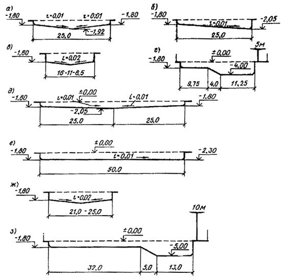
Рис. 1. Схемы продольных профилей универсальных ванн и ванн для спортивного плавания
а – 25-метровая ванна для спортивного плавания с двухсторонним продольным уклоном; б - то же, с односторонним продольным уклоном; в - то же, с двухсторонним поперечным уклоном, г - 25-метровая универсальная ванна с вышкой для прыжков высотою 5 м; д - 50-метровая ванна для спортивного плавания с двухсторонним продольным уклоном, е - то же, с односторонним продольным уклоном; ж - то же, с двухсторонним поперечным уклоном; з - 50-метровая универсальная ванна с вышкой для прыжков высотою 10 м
Разметка поля для водного поло, а также размещение закладных устройств, приведены на рис. 2. Закладные устройства предусматриваются не выступающими из плоскости стенок и дна ванны.
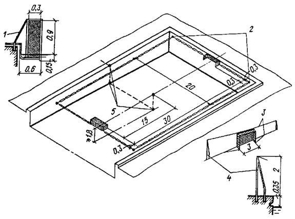
Рис. 2. Разметка поля и размещение закладных устройств для водного поло (размеры даны в м)
1 - крепление ворот к торцевой стенке; 2 - крюки для крепления плавучей разметки границ поля; 3 - троссы; 4 - крепление ворот к продольным стенкам; 5 - закладные устройства для опускания поплавка под мяч на дно
Допускается уменьшение размеров поля до 20 ´ 8 м и глубины - до 1 м. Пропускная способность поля 15 чел. в смену.
3.3. Размеры ванн для прыжков в воду и расстановку устройств для прыжков следует принимать в соответствии с заданным составом устройств, руководствуясь требованиями, приведенными на рис. 3, табл. 2. Пропускную способность каждого устройства для прыжков принимают равной 6 чел. в смену, при этом платформы вышки, расположенные друг над другом, принимаются за одно устройство.
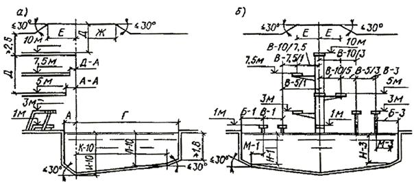
Рис. 3. Схема для определения размеров ванн для прыжков в воду к расстояний между устройствами для прыжков
а - продольный разрез; б - поперечный разрез; (экспликация буквенных обозначений и наименование размеров даны в табл. 2)
Таблица 2
|
Буквенные обозначения и наименование размеров, приведенных на рис. 3 |
Доски трамплинов |
Платформы вышек |
|||||
|
Высота3; длина; ширина4; м1 |
|||||||
|
1; 5; 0,5 |
3; 5; 0,5 |
1; 4,5; 0,6 |
3; 5; 0,8 |
5; 6; 1,5 |
7,5; 6; 1,5 |
10; 6; 2 |
|
|
А - от оси2 назад до стенки ванны |
A-l1,5-1,8 |
А-31,5-1,8 |
А-1пл0,75 |
А-3пл1,25 |
А-51,25-1,5 |
A-7,51,5 |
A-101,5 |
|
А-А - от оси назад до края нижележащей платформы |
- |
- |
- |
- |
А-А5/10,75 |
А-А7,5/3(1) 0,75-1,5 |
A-A-10/5 (3; 1) 0,75-1,5 |
|
Б - от оси до боковой стенки ванны |
Б-12,5-3,0 |
Б-33,5 |
Б-1пл2,3 |
Б-3пл2,9 |
Б-54,25 |
Б-7,5 4,5 |
Б-10 5,25 |
|
В - между осями соседних устройств |
B-l1,9-2,4 |
B-3; В-3,11,9-2,4 |
|
|
В-5/3(1) 2,1 |
В-7,5/5(3; 1) 2,5 |
В-10/7,5 (5; 3; 1) 2,75 |
|
Г - от оси вперед до стенки ванны |
Г-19,0 |
Г-310,25 |
Г-1пл8,0 |
Г-3пл9,5 |
Г-510,25 |
Г-7,511,0 |
Г-1013,5 |
|
Д - высота от поверхности платформы (доски трамплина) до выступающих конструкций потолка или вышележащей платформы, размещенной на одной с нею вертикальной оси |
Д-15,0 |
Д-35,0 |
Д-1пл3,0 |
Д-3пл3,0 |
Д-53,0-3,4 |
Д-7,53,2-3,4 |
Д-103,4 |
|
Е - от оси назад и в стороны, на которых должна быть выдержана высота Д |
Е-12,5 |
Е-32,5 |
Е-1пл2,75 |
Е-3пл2,75 |
Е-52,75 |
Е-7,5 2,75 |
E-102,75 |
|
Ж - от оси вперед, на котором должна быть выдержана высота Д |
Ж-15,0 |
Ж-35,0 |
Ж-1пл5,0 |
Ж-3пл5,0 |
Ж-55,0 |
Ж-7,55,0 |
Ж-106,0 |
|
И - глубина воды по оси устройства для прыжков |
И-13,4-3,8 |
И-33,8-4,0 |
И-1пл3,4 |
И-3пл3,8 |
И-53,8-4,2 |
И-7,54,2-5,0 |
И-104,5-5,5 |
|
К/Л - расстояние вперед от оси и глубина воды на этом расстоянии |
К/Л-1 6/3,3-3,7 |
К/Л-3 6/3,7-3,9 |
К/Л-1пл6/3,3 |
К/Л-3пл6/3,3-3,7 |
К/Л-5 6/3,7-3,9 |
К/Л-7,58/4,0-4,4 |
К/Л-1012/4,25-4,75 |
|
М/Н - расстояние в стороны от оси и глубина воды на этом расстоянии |
М/Н-1 2,5/3,3-3,7 |
М/Н-33,25/3,7-3,9 |
М/Н-1пл2,05/3,3 |
М/Н-3пл2,65/3,3-3,7 |
М/Н-54,25/3,7-3,9 |
М/Н-7,54,5/4,0-4,4 |
M/H-105,25/4,25-4,75 |
Примечание. Над чертой - условные обозначения; под чертой - размер.
1 В ваннах, специализированных для прыжков в воду и в универсальных ваннах длиной 50 м, предназначенных для соревнований всесоюзного и более высокого масштаба по прыжкам в воду, следует принимать наибольшие размеры из приведенных в настоящей таблице.
2 За ось, от которой ведется отсчет, принимается вертикаль, проходящая через передний край данного устройства для прыжков, по его продольной оси.
3 Допустимые отклонения высоты устройств для прыжков от поверхности воды:
± 0,1 м для трамплинов и + 0,1 м для платформы вышки.
4 При ширине платформ вышек, превышающей минимальную (указанную в настоящей таблице), требуемые расстояния «В» следует увеличивать на половину дополнительной ширины платформы (платформ).
В ваннах для прыжков и в универсальных ваннах длиной 50 и 33,33 м предусматривается, как правило, комплект устройств для прыжков, состоящий из вышки с платформами на высоте 10; 7,5; 5; 3; 1 м, двух трамплинов на высоте 3 м и двух трамплинов на высоте 1 м. Рекомендуется один из трамплинов предусматривать переменной высоты в пределах от 0,5 до 3 м. Могут предусматриваться дополнительно по одному трамплину на высоте 1 и 3 м. Платформа вышки на высоте 1 м в универсальных ваннах не предусматривается или допускается уменьшать ее длину до 1,5 м. Платформа на высоте 7,5 м предусматривается только в составе 10 м вышки.
В универсальных ваннах длиной 25 м вышки высотою 10 и 7,5 м не устраиваются. Комплект устройств для прыжков в этих ваннах определяется в зависимости от ширины ванны в соответствии с нормативными расстояниями между устройствами. Схемы расстановки устройств для прыжков в воду и стартовых тумбочек в универсальных ваннах приведены на рис. 4.
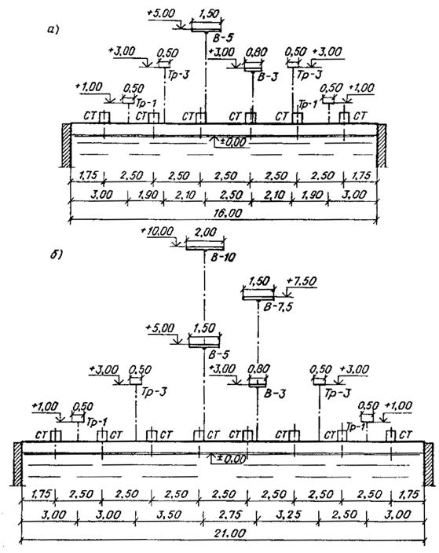
Рис. 4. Схемы расстановки устройств для прыжков в воду и стартовых тумбочек в универсальных ваннах (размеры в м)
а - в универсальной ванне 25 ´ 16 м, б - в универсальной ванне 50 ´ 21 м. Условные обозначения: В - вышка, Тр – трамплин; СТ - стартовая тумбочка
Устройства для прыжков в воду открытых ванн следует ориентировать на север или северо-восток.
У всех устройств для прыжков предусматриваются стационарные лестницы с поручнями, а у задней и боковых сторон платформ вышки перила высотой 1,2 м с отступом от переднего края на 0,8 м. Люки - выходы лестниц также должны быть огорожены. Для подъема на вышку, кроме лестниц, могут устраиваться лифты. Рабочие поверхности платформ вышки выполняются нескользкими, а передние кромки платформы - не закругляются. Длину специализированных ванн для прыжков (для использования их для занятий пловцов), по стороне, где установлены прыжковые устройства, рекомендуется принимать 25 м (рис. 5).
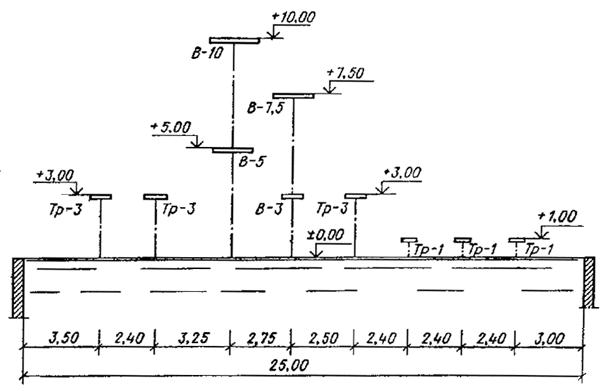
Рис. 5. Схема расстановки прыжковых устройств в специализированной ванне вдоль стенки длиною 25 м
Условные обозначения: В - вышка; Тр - трамплин; (размеры даны в м)
3.4. В продольных стенках ванн для спортивного плавания, а также универсальных ванн следует предусматривать переливной желоб для сброса воды. Схемы профилей продольных стенок ванн приведены на рис. 6.
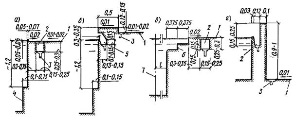
Рис. 6. Схема профилей продольных стенок ванн (размеры в м)
а - вариант с «переливным» бортом, не выступающим над уровнем воды; б - вариант с «пенным корытцем» - бортом, выступающим над уровнем воды; в - вариант со ступенями для выхода из воды в специализированных ваннах для прыжков в воду; г - вариант для детских ванн с заглубленной обходной дорожкой; 1 - обходная дорожка; 2 - переливной желоб с решеткой; 3 - трап; 4 - уступ для отдыха; 5 - переливной желоб; 6 - ступени для выхода из воды; 7 - вертикаль по переднему краю ближайшего прыжкового устройства
В крытых ваннах длиною 50 и 25 м, предназначенных в основном для спортивного плавания, продольные стенки ванны рекомендуется проектировать по варианту А. В открытых ваннах круглогодичного действия профиль стенок ванн по варианту А, как правило, не применяется (за исключением бассейнов в южных районах страны).
Решетка переливного желоба при вариантах А и В устраивается заподлицо с поверхностью обходной дорожки.
Верхняя плоскость стенки при варианте Б и проступи ступеней для выхода из воды при варианте В выполняются нескользкими.
Кромка борта при варианте А и кромка переливного желоба при вариантах Б и Г, а также ребра ступеней для выхода из воды при варианте В выполняются закругленными.
В ваннах для обучения не умеющих плавать стенку рекомендуется проектировать по варианту Г, но можно применять и вариант Б; в этом случае толщину стенки поверху допускается уменьшать с 0,5 до 0,25 м.
3.5. По обеим продольным стенкам ванн для спортивного плавания, а также универсальных ванн следует предусматривать уступ для отдыха.
Уступ для отдыха устраивается в местах, где глубина воды более 1,20 м. В крытых ваннах, специализированных для прыжков в воду, вдоль стенки, по которой расположены прыжковые устройства, устраиваются пологие ступени для выхода из воды, а уступ для отдыха под ними не предусматривается (рис. 6 вариант В).
3.6. В ваннах для спортивного плавания по одной или обеим торцевым стенкам (при глубине воды у стенки не менее 1,8 м) следует предусматривать стартовые тумбочки высотой 0,50-0,75 м над уровнем воды.
Схемы стартовых тумбочек с поручнями и торцевых стенок ванн приведены на рис. 7. В случаях когда продольные стенки выполняются по варианту А, профиль торцевой стенки предусматривается по варианту I (см. рис. 7). В случаях когда продольные стенки выполняются по варианту Б (см. рис. 6), торцевая стенка предусматривается по варианту II или III (см. рис. 7). Уступ для отдыха по торцевым стенкам ванн не предусматривается. Торцевые стенки ванн для спортивного плавания в надводной части - на высоту не менее 0,3 м и в подводной части - на глубину не менее 0,8 м выполняются нескользкими.
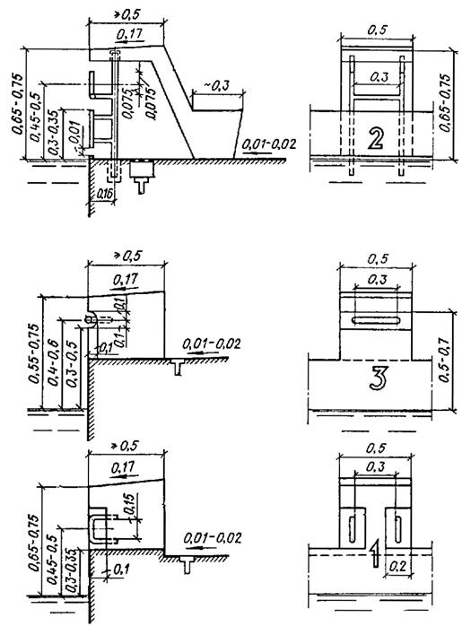
Рис. 7. Схемы стартовых тумбочек с поручнями для старта в плавании на спине (размеры в м)
1 - вариант с бортом, не выступающим над уровнем воды и стартовой тумбочкой с комбинированным поручнем; 2 - вариант с бортом, выступающим над уровнем воды и стартовой тумбочкой с горизонтальным поручнем; 3 - то же, с вертикальным поручнем
Прочный и жесткий экран (стационарный или съемный), предусматриваемый при варианте I, устанавливается по всей длине стенки, заподлицо с нею и имеет нескользкую поверхность (обращенную к ванне). Стартовые тумбочки располагаются по оси каждой дорожки для спортивного плавания. В ваннах для учебно-тренировочных занятий вместо стартовых тумбочек допускается по всей длине торцевой стенки предусматривать стартовый мостик. Рабочая поверхность тумбочки (мостика) выполняется нескользкой. Ступенька предусматривается у тумбочек высотою 0,55 м и более от поверхности обходной дорожки. Диаметр сечения поручней для старта в плавании на спине 0,03-0,04 м.
3.7. Размещение закладных устройств и разметка ванны для спортивного плавания приведены на рис. 8. Для проведения оздоровительного плавания можно предусматривать дополнительные ниши с крюками для крепления поплавков разметки дорожек в ванне:
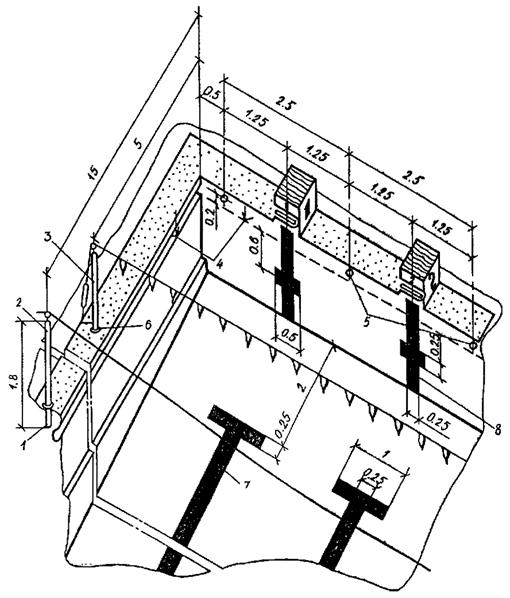
Рис. 8. Размещение закладных устройств и разметка ванны для спортивного плавания
1 - гнездо под стойку для шнура повторного старта; 2 - стойки для шнура для остановки участников при фальшстарте; 3 - стойки для шнура с флажками - указателями поворотов для пловцов на спине; 4 - уровень воды; 5 - крюки для крепления поплавков разметки дорожек; 6 - гнезда под стойку для шнура с флажками; 7 - разметка осей дорожек на дне; 8 - разметка осей дорожек на торцевых стенках (размеры в м)
50 ´ 25 м - для дорожек шириною 2,5 м, расположенных по поперечной оси ванны;
50 ´ 21 м - для 10 дорожек шириною 2 м;
25 ´ 16 м - для 8 дорожек шириною 1,9 м;
25 ´ 11 м - для 6 дорожек шириною 1,75 м;
25 ´ 8,5 м - для 5 дорожек шириною 1,6 м каждая.
Закладные устройства предусматриваются не выступающими из плоскости стенок ванны и обходной дорожки. Полосы разметки осей дорожек контрастно выделяются на фоне стенок и дна; отклонение от приведенных на рисунке размеров может быть в пределах не более ± 0,05 м. При продольных стенках, не выступающих над уровнем воды (рис. 6, вариант А), гнезда под стойки для шнуров повторного старта и с сигнальными флажками устанавливаются на обходной дорожке за переливным желобом.
3.8. Во всех ваннах следует предусматривать лестницы для выхода из воды. В ваннах для спортивного плавания длиной 50 м следует предусматривать по три, длиной 25 и 33,33 м по две лестницы с каждой продольной стороны, располагая их в нишах, не выступающих из плоскости стенок ванн. В ваннах для прыжков в воду допускается устройство, одной лестницы.
Схема лестницы для выхода из воды в ваннах для спортивного плавания и водного поло приведена на рис. 9. Ниши для лестниц могут доходить только до уступа для отдыха.
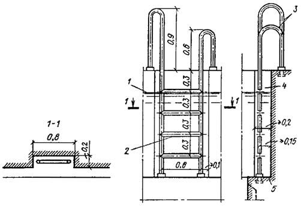
Рис. 9. Схемы лестницы для выхода из ванны
1 - уровень воды; 2 – ступени; 3 - равновысокие поручни; 4 - ниша; 5 - уступ для отдыха (размеры в м)
Лестницы располагаются не ближе 3 и не далее 5 м от торцевых стенок; в случае устройства смотровых окон или выплывов они размещаются дальше от торцевой стены, чем смотровое окно или выплыв.
3.9. В продольных стенках открытых ванн круглогодичного действия следует устраивать раздельные для мужчин и женщин выплывы (каналы с водой) из душевых. Ширина выплыва принимается 1,8 м, а глубина (за пределами здания) - не менее 0,9 м. Расстояние от выплыва до торцевой стены ванны - не менее 1 м. Над выплывами в стене здания следует предусматривать гидравлические затворы, а на обходной дорожке - переходные мостики.
3.10. В ваннах для прыжков в воду и в глубокой части универсальных ванн, предназначаемой для прыжков, уклон дна следует принимать согласно рис. 3. В остальных ваннах уклон дна к местам выпуска воды следует принимать не менее 0,01, но не более 0,045; допускаются уклоны в поперечном направлении.
3.11. По периметру ванн следует предусматривать обходную дорожку шириной не менее 1,5 у крытых и не менее 2 м у открытых ванн (считая от внешней грани стенки ванны). Вдоль обходной дорожки крытых ванн предусматриваются стационарные скамьи шириной не менее 0,3 м.
Ширина обходной дорожки у торцевой стенки ванны со стартовыми тумбочками принимается не менее 3 м; ширина обходной дорожки вдоль стенок с устройствами для прыжков принимается с учетом габаритов этих устройств и обеспечения подходов к ним, но не менее 4 м в ваннах с не выступающими над водой стенками и 3,5 м - с выступающими стенками. При расположении ванны для спортивного плавания и ванны для прыжков в воду торцами друг к другу обходную дорожку между ними принимают шириной 5 м. Ширину обходных дорожек 25-метровых ванн, размещаемых в залах длиной 30 м (в строительных осях), допускается уменьшать до 1 м - у торцевых стенок без стартовых тумбочек; до 2,2 м - у торцевых стенок со стартовыми тумбочками.
Поверхность обходной дорожки должна быть нескользкой и иметь уклон 0,01-0,02 в сторону трапов.
В залах крытых ванн поверхность обходной дорожки и скамей должна обогреваться. В пониженной части обходной дорожки у ванн для обучения не умеющих плавать (см. п. 3.19) обогрев, как правило, не предусматривается.
Схема конструкции обходной дорожки крытых ванн приведена на рис. 10. Обходные дорожки открытых ванн не обогреваются.
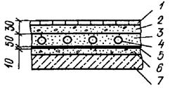
Рис. 10. Схема конструкции обходной дорожки крытых бассейнов
1 - керамическая плитка; 2 - цементная стяжка; 3 - гидроизоляция на цементной стяжке по слою пергамина; 4 - обогревающие трубы в слое песка; 5 - цементная стяжка; 6, 7 - плита перекрытия
На обходных дорожках ванн для прыжков в воду и универсальных ванн в непосредственной близости к прыжковым устройствам рекомендуется размещать души для обогрева прыгунов с t = 36-40 °С из расчета 1 сетка на 10 прыгунов. Души могут располагаться в открытых кабинах или без кабин.
По внешнему периметру обходных дорожек открытых ванн следует предусматривать стационарное ограждение, исключающее доступ к ваннам посторонних лиц.
3.12. Материал покрытия обходной дорожки и скамей, стенок и дна ванн принимается поддающимся очистке и дезинфекции и устойчивым к применяемым для очистки воды и ванны химическим реагентам. Обходная дорожка, стенки и дно ванны предусматриваются водонепроницаемыми, а внутренняя поверхность ограждающих конструкций залов ванн - влагостойкой.
Внутренняя поверхность стенок и дна ванн выполняется из материалов светлых тонов. Швы между облицовочными плитками тщательно затираются.
3.13. Смотровые окна для наблюдения за движениями занимающихся под водой устраиваются, как правило, в крытых ваннах длиной 50 м и в крытых ваннах, специализированных для прыжков в воду.
Смотровые окна рекомендуется принимать высотой 0,4-0,5 м и шириной 1-2 м. Смотровые окна для наблюдения за прыгунами рекомендуется размещать на расстоянии 3-3,5 м от стенки ванны, у которой размещены устройства для прыжков, а для наблюдения за пловцами - в продольных стенах ванн не ближе 1-1,5 м от торцевой стены.
Для доступа к смотровым окнам следует предусматривать подходы шириной не менее 1,2 м и высотой не менее 1,8 м.
3.14. В бассейнах с крытыми ваннами длиной 50 м следует предусматривать возможность осмотра и ремонта стенок и дна ванн с наружной стороны из проходных (высотою 1,8 м) или полупроходных (высотою 1,2 м) боковых галерей и подполья.
3.15. Высоту залов ванн для спортивного плавания (от поверхности обходной дорожки до низа выступающих конструкций) без устройств для прыжков и мест для зрителей принимают при длине ванны 50 и 33,33 м не менее 6 м; при длине ванны 25 м - 5,4 м.
Высоту залов ванн для прыжков в воду, а также залов универсальных ванн (в пределах прыжковой части) следует принимать по табл. 2 и рис. 3. Высота залов демонстрационных бассейнов определяется, кроме того, высотой трибуны.
3.16. В бассейнах с крытыми ваннами для спортивного плавания и прыжков в воду следует предусматривать залы для подготовительных занятий, а при бассейнах с открытыми ваннами - открытые площадки. В бассейнах с крытыми ваннами для спортивного плавания размером 25 ´ 8,5 м залы для подготовительных занятий можно не предусматривать.
Размеры залов для подготовительных занятий принимаются:
18 ´ 9 м высотой 5,4 м - при ваннах длиной 25 м;
24 ´ 12 м высотой 6 м - при ваннах длиной 50 м;
24 ´ 12 м высотой 7,2 м - при ваннах для прыжков в воду и универсальных ваннах длиной 50 м для плавания и прыжков в воду.
Примерные схемы планов расстановки оборудования в залах для подготовительных занятий приведены на рис. 11, а, б, в.
Размеры открытых площадок для подготовительных занятий следует принимать из расчета 4,5 м2 на одного занимающегося, исходя из суммарной пропускной способности открытых ванн бассейна.
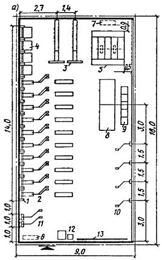
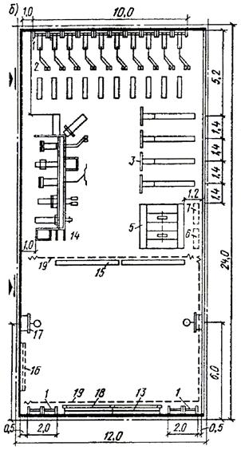
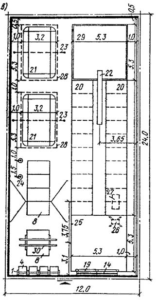
Рис. 11. Схематические планы расстановки оборудования в залах подготовительных занятий
а - в зале 18 ´ 9 м при ванне для плавания длиною 25 м; б - в зале 24 ´ 12 м при ванне для плавания водного поло длиною 50 м; в - в зале 24 ´ 12 м при специализированной ванне для прыжков в воду или универсальной ванне длиною 50 м
1 - стенка гимнастическая; 2 - тренажер для специальной силовой подготовки пловцов; 3 - специализированный тренажер для ног; 4 - перекладина; 5 - помост тяжелоатлетический размером 2,8 ´ 2,8 м; 6 - стеллаж для грифов штанг и гантелей; 7 - стеллаж для дисков штанг; 8 - мат гимнастический; 9 - тренажер-тумба для развития прыгучести; 10 - тренажер для развития силы рук (инерционный); 11 - тренажер типа «Эспандер грузовой»; 12 - место тренера; 13 - зеркало; 14 - тренажер универсальный (многоснарядный) типа «Змиевчанин»; «Геркулес» и т.п.; 15 - скамейка гимнастическая; 16 - щит для ватерполистов; 17 - щит для мини-баскетбола; 18 - станок хореографический; 19 - сетка-ограждение; 20 - гимнастические маты; 21 - батут (складной, массовый); 22 - «сухой» трамплин; 23 - лонжа универсальная (подвесная); 24 - канат для лазания; 25 - ковер размеров 5,3 ´ 5,3 м; 26 - козел гимнастический; 27 - костяк гимнастический эластичный; 28 - яма для батута; 29 - маты под «сухим» трамплином; 30 - брусья гимнастические
3.17. Открытые и крытые ванны для оздоровительного плавания, купания, общеразвивающих упражнений и игр в воде, а также для обучения не умеющих плавать, со вспомогательными помещениями для их обслуживания могут проектироваться в отдельно стоящих зданиях, входить в состав зданий спортивных бассейнов, а также быть пристроенными или встроенными в здания другого назначения.
Размеры и пропускную способность ванн в зависимости от вида проводимых в них занятий следует принимать по табл. 3.
Таблица 3
|
Вид занятий |
Размеры, м* |
Пропускная способность, чел. |
|||
|
длина |
ширина |
глубина** |
|||
|
в мелкой части |
в глубокой части |
||||
|
1. Оздоровительное и спортивное плавание (по дорожкам) |
25 |
16 11 8,5 |
1,2 |
1,8 |
64 48 40 |
|
2. Оздоровительное плавание (свободное)*** |
25 |
11 8,5 |
1,2 |
1,45 |
48 40 40 24 18 |
|
20 |
10 |
||||
|
16,67 |
8,0 6,0 |
||||
|
3. Купание, общеразвивающие упражнения и игры в воде*** |
Произвольных размеров и формы с площадью зеркала воды не менее 90 м2 |
1 |
1,25 |
Из расчета 5 м2 зеркала воды на 1 чел. |
|
___________
* При реконструкции существующих помещений допускается предусматривать длину ванн для оздоровительного плавания 12,5 м, а ширину в соответствии с шириной реконструируемого помещения.
** При проектировании ванн в полносборных конструкциях уклон дна можно не предусматривать.
*** Оздоровительное плавание, купание, общеразвивающие упражнения и игры в воде разрешается проводить в одной общей ванне с понижением уровня воды на 20 см.
Высота залов ванн (от поверхности воды до низа выступающих конструкций) для оздоровительного плавания, игр в воде и купания, как правило, принимается равной 5,4-4,8 м. При реконструкции существующих помещений допускается уменьшение высоты до 3 м.
По периметру крытых ванн следует предусматривать обходную дорожку шириной не менее 1,25 м, у открытых ванн - не менее 2 м.
В ваннах длиной 25 и 20 м для выхода из воды следует предусматривать по две лестницы с каждой продольной стороны ванны; в остальных ваннах допускается устраивать одну лестницу.
Устройство стартовых тумбочек разрешается только у торцевой стенки ванн (п. 1 табл. 3) с глубиной воды 1,80 м. В ваннах по пп. 2-3 табл. 3 устройство стартовых тумбочек не допускается.
При проектировании ванн для физкультурно-оздоровительных занятий в них следует предусматривать переливной желоб для сброса воды, уступ для отдыха, а в открытых ваннах круглогодичного действия, кроме того, - выплывы, устраиваемые согласно п. 3.4, 3.5 и 3.9.
3.18. В каждом бассейне следует предусматривать ванны для обучения не умеющих плавать детей в возрасте от 7 до 14 лет и размещать эти ванны в отдельном отапливаемом помещении. В комплексных бассейнах с крытыми и открытыми ваннами рекомендуется дополнительно предусматривать открытые ванны сезонного действия для обучения не умеющих плавать. Размеры и пропускную способность ванн для обучения детей плаванию следует принимать согласно табл. 4.
Таблица 4
|
Вид занятий |
Размеры, м |
Пропускная способность, чел. |
|||
|
длина |
ширина |
глубина |
|||
|
в мелкой части |
в глубокой части |
||||
|
Обучение не умеющих плавать: |
|||||
|
детей от 7 до 10 лет |
10 или |
6 |
0,6 |
Не более 0,85 |
20 |
|
детей от 10 до 14 лет* |
12,5 |
0,8 |
Не более 1,05 |
||
|
детей старше 14 лет и взрослых |
10 или 12,5 |
6 |
0,9 |
Не более 1,25 |
20 |
____________
* Допускается использование этой ванны и для обучения детей от 7 до 10 лет с понижением уровня воды на 20 см.
Примечания:
1. Размеры и глубину ванн для оздоровительных занятий и обучения не умеющих плавать до 7 лет следует принимать согласно Пособию по проектированию детских дошкольных учреждений.
2. Размеры и форма ванн для обучения не умеющих плавать детей от 7 до 14 лет могут быть произвольными; при этом пропускную способность следует принимать из расчета 4 м2 зеркала воды на занимающегося.
3.19. В крытых ваннах для обучения не умеющих плавать обходную дорожку по трем сторонам ванны рекомендуется опускать ниже верха стенки ванны на 0,9-1 м; при этом допускается уменьшение ширины дорожки до 0,75 м. В некоторых случаях пониженная обходная дорожка предусматривается только по продольным сторонам ванны, а в торцах не делается.
Пример плана зала с ванной для обучения не умеющих плавать размером 10 ´ 6 м приведен на рис. 12.
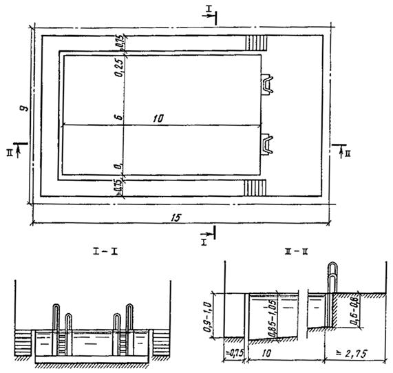
Рис. 12. Схема зала с ванной для обучения не умеющих плавать детей с обходной дорожкой, пониженной по 3 сторонам (размеры в м)
Высота залов ванн для обучения плаванию принимается не менее 3,6 м от уровня воды.
Ванны для обучения не умеющих плавать могут устраиваться напольными.
3.20. В открытых и крытых бассейнах трибуны для зрителей проектируются, как правило, в стационарных конструкциях с местами для сидения.
3.21. Трибуны для зрителей располагаются обычно по продольным сторонам ванн. Односторонние трибуны открытых бассейнов не рекомендуется ориентировать на запад.
На балконах предусматривается один ряд мест для сидения и один для стояния из расчета 9 зрителей на 2 м балкона.
3.22. Размеры мест на трибунах принимают:
глубину ряда - 0,8-0,9 м;
ширину места (вдоль ряда) - для открытых бассейнов не менее 0,42 м, для крытых - 0,45 м;
глубину сидения - 0,4 м;
высоту сидения над уровнем пола прохода - 0,43 м.
При разнице уровня пола смежных рядов трибуны св. 0,3 м у сидений предусматриваются спинки, возвышающиеся над полом выше расположенного ряда не менее чем на 0,12 м. При разнице уровней пола смежных рядов св. 0,55 м вдоль прохода каждого ряда устанавливается ограждение высотой не менее 0,7 м, не препятствующее видимости.
3.23. Профиль трибун следует проектировать с обеспечением беспрепятственной видимости наблюдаемой точки (фокуса) согласно рис. 13. Перемещение наблюдаемой точки (фокуса) на расстояние l2 = 2,5 м допускается: в бассейнах с ваннами шириною 25 м; при превышении допустимого уклона трибун, принятого при расположении наблюдаемой точки (фокуса) на расстоянии l1; в бассейнах, предназначенных в основном для учебно-тренировочных занятий; при расположении зрительских мест на балконах.
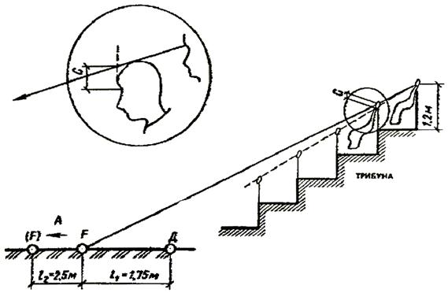
Рис. 13. Местоположение наблюдаемой точки (фокуса)
А - зеркало воды; Тр - трибуна; С - превышение луча зрения зрителя последнего ряда профиля трибуны (или каждого отрезка профиля по ломаной линии), направленного на наблюдаемую точку (фокус), над уровнем глаза впереди расположенного зрителя принимается 0,12-0,14 м в крытых и 0,15 м в открытых бассейнах; Д - ближайший к трибуне борт ванны; F - наблюдаемая точка (фокус) - ось ближайшей к трибуне дорожки для плавания; l1 - расстояние от борта ванны до оси дорожки; l2 - расстояние от оси второй дорожки, на которое допускается перемещать наблюдаемую точку (фокус), равную 2,5 м
В ваннах для прыжков в воду положение фокуса принимается на поверхности воды на продольной оси ближайшего к трибуне устройства для прыжков.
3.24. Последовательность построения профиля трибуны рекомендуется следующая:
а) определение места положения и длины трибуны на плане сооружения;
б) установление по расчету видимости отметки пола первого ряда, принимаемой не менее 1 м выше отметки поверхности обходной дорожки (глубина первого ряда принимается 1-1,1 м);
в) установление числа рядов трибуны т по формуле:
т = NKa/L,
где N - заданная вместимость трибуны; К - коэффициент потери мест на проходы (лестницы), принимаемый 1,15 для крытых и 1,05 для открытых бассейнов; а - ширина места; L - примерная длина трибуны, м.
Профиль трибун с числом рядом до 15 проектируется по наклонной прямой, при большем числе рядов по ломаной линии.
Построение профиля трибуны можно вести аналитическим и графоаналитическим способами. На рис. 14 показано построение профиля трибуны по наклонной прямой аналитическим способом, а на рис. 15 - графоаналитическим.
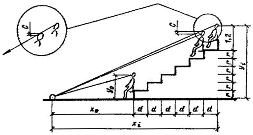
Рис. 14. Построение профиля трибуны по наклонной прямой аналитическим методом
При построений профиля трибуны по ломаной линии трибуна разбивается на группы рядов, в пределах каждой из которых строится свой профиль по наклонной прямой. Число групп рядов принимается, как правило, кратным числу десятков рядов проектируемой трибуны или на единицу больше; при этом число рядов в последующей группе должно быть равным или большим, чем в предыдущей. Построение профиля трибуны по ломаной линии состоит из последовательного (аналитического или графоаналитического) определения профиля каждого прямого отрезка (группы) трибуны, начиная с ближайшего к наблюдаемой точке F. При этом последний ряд каждого отрезка принимается за первый ряд последующего отрезка.
Положение глаз сидящего зрителя по вертикали принято считать от пола ряда на высоте 1,2 м. Расстояние от фокуса до глаз зрителя по горизонтали принимается до задней границы каждого ряда.
При аналитическом способе построения (см. рис. 14) местоположение глаза зрителя yi, последнего ряда трибуны относительно фокуса F определяется по формуле:
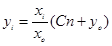
xi = xo + nd,
где С - нормируемая величина превышения луча зрения, м; xo - расстояние по горизонтали от фокуса до глаз зрителей первого ряда, м; xi - то же, до глаза зрителей последнего ряда, м; уо - расстояние по вертикали от фокуса до глаз зрителей первого ряда, м; п - число промежутков между рядами (число рядов трибуны минус единица); d - принятая глубина ряда, м.
При графоаналитическом способе построения (см. рис. 15) наносятся местоположения точек F, хо, уо. Затем построение профиля осуществляется в следующей последовательности:
а) над местоположением глаз зрителя первого ряда по вертикали откладывается общее превышение луча зрения зрителя последнего ряда f = Сп;
б) зная количество рядов трибуны т и глубину каждого ряда d восстанавливается вертикаль в точке, соответствующей местоположению глаз зрителей последнего ряда; продолжив прямую, соединяющую точку А с фокусом F до пересечения с проведенной вертикалью, определяется положение глаз зрителей последнего ряда;
в) соединив прямой линией положения глаз зрителей первого и последнего рядов и восстановив вертикали для каждого ряда, определяется положение глаз зрителей каждого ряда;
г) отложив от положения глаз зрителей по вертикали вниз величину уо (1,2 м на трибунах для сидения), получаем отметку пола каждого ряда, т. е. профиль, трибуны.
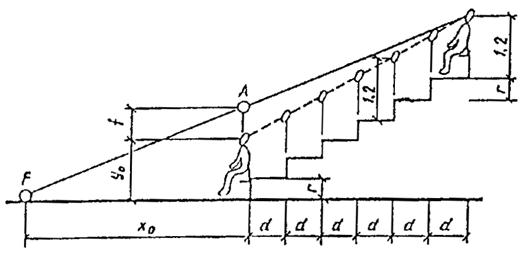
Рис. 15. Построение профиля трибуны по наклонной прямой графоаналитическим методом
Если полученный профиль будет иметь уклон, превышаемый допустимый, следует изменить местоположение фокуса и произвести новое построение.
Высота подступенков r определяется по формуле:
r = (yi – yo)/n.
При построении профиля трибуны по ломаной линии высота подступенков определяется для каждого отрезка профиля.
Строительная высота трибуны с профилем по наклонной прямой определяется как произведение высоты подступенка r на число промежутков n между рядами.
Строительная высота трибуны с профилем по ломаной линии определяется как сумма высоты профилей каждого отрезка.
3.25. Уклон трибун не должен превышать 1 : 1,6. Допускается увеличение уклона, но не более чем 1 : 1,4 при условии установки вдоль путей эвакуации по лестницам трибун поручней (или иных устройств) на высоте не менее 0,9 м. При ширине лестниц более 2 м непрерывные поручни устанавливаются по продольной оси лестницы, а при ширине менее 2 м - в торцах рядов, примыкающих к лестнице.
Для отделения зрителей от спортсменов трибуны бассейнов должны быть отгорожены от обходной дорожки глухим барьером; при этом верх барьера принимается не менее 1,8 м выше уровня обходной дорожки. С трибун открытых бассейнов вместимостью до 700 мест для использования их в качестве соляриев допускается предусматривать лестницы на них с обходной дорожки.
По верху и по торцам трибун следует устанавливать ограждение высотой не менее 1,2 м. Расстояние от пола верхнего ряда трибуны до выступающих конструкций потолка принимается не менее 2,2 м.
3.26. В крытых бассейнах с 25-метровыми ваннами обычно проектируются трибуны с 4-6 рядами, разделенными посередине проходом-лестницей шириною 1,35-1,6 м; примерная вместимость трибун - 250 (4 ряда), 300 (5 рядов), 360 мест (6 рядов).
В крытых бассейнах с 50-метровыми ваннами обычно проектируются трибуны с 5-7 рядами, разделенными на два или три блока проходами-лестницами шириною 1,35 или 1,8 м посередине блоков; примерная вместимость трибуны 600 (5 рядов), 700 (6 рядов), 840 мест (7 рядов).
При проектировании трибун больших вместимостей следует руководствоваться требованиями СНиП 2.08.02-89 «Общественные здания и сооружения».
3.27. Конструкцию сидений на трибунах рекомендуется принимать консольного типа в виде скамей со спинками или штампованных пластмассовых сидений без подлокотников.
3.28. На трибунах открытых и крытых демонстрационных бассейнов, предназначенных, для соревнований республиканского и более высокого масштаба, следует, как правило, предусматривать ложу прессы. Число мест в ложе определяется заданием на проектирование.
3.29. Площадь вестибюля (без тамбура) определяется из расчета 0,5 м2 на одного занимающегося в смену (но не менее 20 м2) и 0,25 м2 на одно зрительское место. В демонстрационных бассейнах рекомендуется устройство раздельных вестибюлей для занимающихся (соревнующихся) и зрителей. В открытых бассейнах вестибюль для зрителей не предусматривается.
Пути движения занимающихся из вестибюля в раздевальни рекомендуется обособлять от путей движения зрителей.
В вестибюлях спортивных и оздоровительных бассейнов, работающих в зимнее время при расчетной температуре наружного воздуха ниже минус 15 °С (параметр Б), должно предусматриваться устройство тамбуров или воздушно-тепловых завес.
3.30. Гардеробная верхней одежды для занимающихся и зрителей. Площадь определяется из расчета 0,1 м2 на одно место, но не менее 10 м2 (в оздоровительных бассейнах - не менее 6 м2).
Расчетное число мест в гардеробной верхней одежды для занимающихся принимается на 300 % пропускной способности смены. В бассейнах без залов или площадок подготовительных занятий площадь принимается на 200 % численности смены.
Гардеробная для верхней одежды зрителей рассчитывается на 100 % зрительских мест. Глубина гардеробной не должна превышать 6 м.
В крытых бассейнах в расчетное число мест следует включать сотрудников, число которых определяется типовыми штатными расписаниями*.
___________
* Справочник. Физкультурно-оздоровительная работа профсоюзов. – М: Профиздат.- 1985.
3.31. Помещение для родителей, ожидающих детей, площадью 16-20 м2 желательно размещать смежно с залом ванны для обучения, отделенное от зала остекленной перегородкой с автоматически или вручную управляемой шторкой со стороны зала ванны.
Допускается располагать ожидающих родителей в вестибюле на дополнительной площади 0,5 м2 на одно место на 100 % единовременной пропускной способности детской ванны (ванн). Места для верхней одежды родителей следует также учитывать при расчете гардеробных.
В бассейнах с общими вестибюлями для занимающихся и зрителей дополнительная площадь для ожидания и хранения верхней одежды родителей не предусматривается.
3.32. Регистратура площадью 4-6 м2 размещается и вестибюле или на пути движения к раздевальням.
3.33. Фойе предусматривается в крытых бассейнах, имеющих места для зрителей. Площадь исчисляется из расчета 0,35 м2 на зрительское место.
При устройстве входов на трибуну с отметки вестибюля, фойе обычно совмещается с ним и площадь не суммируется, а принимается по наибольшей.
3.34. Кассы предусматриваются в демонстрационных, а также во всех других бассейнах, где предусмотрено оказание платных услуг. Площадь кассовой кабины принимается 2,5-4 м2.
В крупных демонстрационных бассейнах две и более кабины целесообразно объединять в кассовый вестибюль, площадь которого определяется из расчета 4 м2 на каждую кабину. Кассовый вестибюль должен иметь самостоятельный наружный вход, сообщаться с вестибюлем для зрителей и помещением администратора площадью 8-10 м2.
3.35. Раздевальни должны размещаться на одной отметке с обходными дорожками открытых и крытых ванн и сообщаться с ними только через душевые, а с залом или площадкой для подготовительных занятий - минуя душевые.
В бассейнах с несколькими ваннами рекомендуется предусматривать раздевальни для каждой ванны.
Раздевальни, душевые и санитарные узлы при ваннах для детей до 14-летнего возраста следует располагать отдельно от аналогичных помещений для взрослых.
3.36. Раздевальни для занимающихся рекомендуется предусматривать как для переодевания, так и для хранения домашней одежды.
Для переодевания в помещении раздевальни устанавливаются скамьи из расчета 0,6 м дины скамьи на одно место. Площадь на одно место для переодевания (с учетом подхода к ним составляет 1,2 м2 при числе мест в одном помещении более 40 и 1,5 м2 при числе мест 40 и менее.
Число мест для переодевания принимается на 100 % занимающихся в смену, а соотношение числа мест в мужской и женской раздевальнях принимается, как правило, 1 : 1.
Хранение домашней одежды предусматривается в закрытых шкафах. Шкафы могут применяться двух типов:
а) двухъярусные (на два места) размером в плане 0,6 ´ 0,3 м (площадь на шкаф 0,18 м2);
б) одноярусные металлические трехъячеистые (трехместные) «шкафы индивидуального использования» (ШИП) размером в плане 1,15 ´ 0,5 м (площадь на шкаф 0,58 м2); ШИПы, имеющие высоту 0,98 м, могут устанавливаться в два яруса.
При оборудовании раздевален шкафами типа «a» в бассейнах с залами (площадками) для подготовительных занятий на каждые четыре места для переодевания предусматривается девять двухъярусных шкафов; при отсутствии залов или площадок на каждые два места для переодевания предусматривается три двухъярусных шкафа. Каждый из шкафов, устанавливаемых в блоке со скамьями для переодевания и имеющих общие со скамьями подходы, занимает площадь 0,18 м2. «Избыточные» шкафы (не умещающиеся в погонаж скамей) устанавливаются отдельно и с учетом подходов, занимают площадь 0,5 м2 на шкаф.
При оборудовании раздевальни ШИПами, устанавливаемыми в два яруса, все они устанавливаются отдельно от скамей и с учетом подходов занимают площадь 1,15 м2 на шкаф или 0,2 м2 на каждое место. В бассейнах с залами (площадками) для подготовительных занятий на каждые 4 места для переодевания предусматривается 3 двухъярусных ШИПа, (18 мест для хранения одежды), а при отсутствии зала (площадки) - на каждые два места для переодевания предусматривается один двухъярусный ШИП (6 мест для хранения домашней одежды).
В раздевальнях для детей до 10-летнего возраста хранение домашней одежды предусматривается в одноярусных шкафах; при этом на одно место для переодевания предусматривается 3 места для хранения одежды (один трехъячеистый ШИП или три одноярусных шкафа площадью в плане 0,18 м2 каждый).
3.37. Площадь раздевален можно, определить, пользуясь удельными показателями площади на одного занимающегося:
в раздевальнях с числом мест до 40-2,5 м2 в бассейнах с залами (площадками) подготовительных занятий; 2,1 м2 - в бассейнах без них;
с числом мест более 40-2,1 м2 в бассейнах с залами (площадками) подготовительных занятий; 1,7 м2 - в бассейнах без них;
для детей до 10 лет - 2,9 м2.
3.38. В раздевальнях ширина проходов между рядами скамей при сидении лицом друг к другу принимается не меньше 1,5 м; между рядом скамей и параллельной ему стеной или стоящим напротив рядом шкафов - 1,1; в боковых проходах - 0,5 м; в главных проходах - 1 м.
3.39. Душевые для занимающихся должны быть проходными и располагаться на пути движения из раздевальни к обходной дорожке.
Душеные при раздевальнях устраиваются открытыми из расчета одна душевая сетка на трех единовременно занимающихся в ванне (ваннах).
При душевых с числом сеток более 6 предусматриваются преддушевые из расчета 0,3-0,5 м2 на одну душевую сетку, оборудованные вешалками для полотенец и ячейками для хранения мыла и мочалок.
3.40. В месте выхода из душевой на обходную дорожку (или к выплыву) предусматривается проходной ножной душ с поддоном шириной, исключающей возможность его обхода, и длиной (по направлению движения из душевой) не менее 1,8 м. Дно поддона должно быть нескользким и иметь уклон в сторону душевой не менее 0,01.
3.41. В раздевальнях следует предусматривать мойки для ног из расчета одна мойка на 20 мест для переодевания, но не менее одной.
3.42. В раздевальнях предусматриваются сушилки для волос из расчета: один прибор на 10 мест для переодевания в женских раздевальнях и один прибор на 20 мест - в мужских.
Сушилки для волос размещают иногда в отдельном помещении, смежном с раздевальней.
3.43. Санитарные узлы для занимающихся должны размещаться при раздевальнях и исключать возможность попадания из них к ваннам, минуя душевые.
Вход и выход в санитарные узлы для зрителей должны быть раздельными.
Число санитарных приборов во вспомогательных помещениях приведено в табл. 5.
Таблица 5
|
Помещение, санитарные приборы |
Число санитарных приборов в помещении |
Дополнительные сведения |
|
Санитарные узлы с умывальниками в шлюзе1; при раздевальнях для занимающихся: |
||
|
женщин |
Один унитаз на 30 мест для переодевания в женской раздевальне, но не менее одного |
- |
|
мужчин |
Один унитаз на 135 и один писсуар на 45 мест для переодевания, но не менее одного унитаза |
- |
|
при раздевальне отдельно размещенной бани сухого жара (см. п. 3.56) |
Один унитаз на помещение |
- |
|
для сотрудников, инструкторского и тренерского состава: |
||
|
женские |
Один унитаз на 15 единовременно работающих женщин, но не менее одного унитаза |
При числе единовременно работающих мужчин и женщин менее 20 предусматривается |
|
мужские |
Один унитаз на 60 и один писсуар на 20 единовременно работающих мужчин, но не менее одного унитаза |
общий санитарный узел на один унитаз |
|
для зрителей: |
||
|
женские |
Один унитаз на 40 (80)2 зрителей-женщин |
Соотношение женщин и мужчин принимается, как правило, 2/5-3/5. |
|
мужские |
Один унитаз на 330 (660) и один писсуар на 66 (132)2 зрителей-мужчин |
Иные соотношения могут приниматься исходя из местных демографических условий. В каждом помещении санузла должно быть, как правило, не более 40 приборов (унитазов, писсуаров) |
|
Умывальни при санитарных узлах для зрителей: |
||
|
женские |
Один умывальник на 4 унитаза в санитарном узле |
- |
|
мужские |
Один умывальник на 8 приборов (унитазов, писсуаров) в санитарном узле |
|
|
Умывальники: |
||
|
в раздевальнях для занимающихся |
Один умывальник на 30 мест для переодевания в раздевальне, но не менее одного |
Допускается размещать дополнительно в шлюзах при санузлах |
|
в комнатах инструкторского и тренерского состава, бытовых помещениях для рабочих, помещениях медицинского обслуживания, массажных, лабораториях анализа воды |
По одному умывальнику на каждое помещение |
|
|
Раковины в тамбурах хлораторных и складах хлора |
Одна раковина в тамбуре |
- |
|
Мойки в помещениях уборочного инвентаря |
Одна мойка на помещение |
- |
____________
1 Умывальники в шлюзах устанавливаются из расчета: один умывальник на каждые 5 приборов (унитазов и писсуаров), но не менее одного умывальника при каждом санитарном узле.
2 Цифры без скобок приведены для крытых, в скобках - для открытых бассейнов.
Размеры кабин, проходов, а также расстояния между приборами приведены в табл. 6.
Таблица 6
|
Показатель |
Уборные |
Умывальни |
Душевые |
|
Размеры кабин в плане, м, при дверях: |
|||
|
наружу |
0,85 ´ 1,3 |
- |
0,85 ´ 1,8** |
|
внутрь |
0,85 ´ 1,5* |
- |
- |
|
открытых |
- |
0,85 ´ 1 |
|
|
Высота разделительных экранов (от пола), м |
1,8 |
- |
1,8 |
|
Расстояние от пола до низа экрана, м |
0,2 |
- |
0,2 |
|
Расстояние между приборами (в осях), м: |
|||
|
умывальниками |
- |
0,65 |
- |
|
писсуарами |
0,7 |
- |
- |
|
Ширина проходов, м*** |
|||
|
между рядами кабин: |
|||
|
до 6 в ряду |
1,5 |
- |
1,5 |
|
св. 6 в ряду |
2 |
- |
1,5 |
|
между рядами умывальников |
- |
1,6 |
- |
|
между рядами писсуаров: |
|||
|
до 6 в ряду |
1,5 |
- |
- |
|
св. 6 в ряду |
2 |
- |
- |
|
между стеной (перегородкой) и рядом кабин |
1,3 |
1,1 |
1 - при числе в ряду до 6 1,5 - при 7 и более приборах |
|
между кабинами и рядом писсуаров |
2 |
- |
- |
__________
* Принимается для уборных, состоящих из одной кабины и шлюза.
** Включая преддушевую при открытых кабинах.
*** Приведена минимальная ширина проходов; в зависимости от архитектурно-планировочного решения и шага строительных конструкций ширина проходов может быть увеличена.
3.44. Санитарные узлы для зрителей открытых бассейнов должны располагаться на расстоянии не более 150 м от самого удаленного места на трибуне.
3.45. Схематические планы раздевален с душевыми и санитарными узлами приведены на рис. 16, а, б. Пропускная способность ванны 25 ´ 11 м (при оздоровительном плавании) - 48 человек в смену. В каждой из двух (женской и мужской) раздевален размещены 24 места для переодевания, 36 двухъярусных закрытых шкафов для хранения одежды, мойка для ног, сушилки для волос, душевая на 8 сеток; санузел с умывальником в шлюзе. Пунктиром показана возможность установки дополнительных мест (скамеек) для переодевания. Пропускная способность ванны 50 ´ 21 м (при оздоровительном плавании) - 120 человек в смену. В каждой из двух (женской и мужской) раздевален размещены 60 мест для переодевания, 90 - двухъярусных закрытых шкафов для хранения одежды, 2 мойки для ног, сушилки для волос, душевая на 20 сеток; санузел с умывальником в шлюзе.
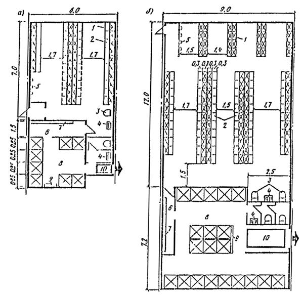
Рис. 16. Схематический план блока раздевальни с душевой и санузлом
а - при ванне для плавания 25 ´ 11 м с залом подготовительных занятий; б - то же, при ванне для плавания 50 ´ 21 м с залом подготовительных занятий; 1 - двухъярусные закрытые шкафы; 2 - скамья для переодевания; 3 - мойка для ног; 4 - умывальник; 5 - сушилка для волос; 6 - преддушевая; 7 - вешалки для полотенец; 8 - душевая; 9 - стеллаж для мыла и мочалок; 10 - ножной проходной душ
3.46. Инвентарные для хранения переносного спортивного оборудования и инвентаря могут предусматриваться при открытых и крытых ваннах и залах для подготовительных занятий.
Инвентарные должны располагаться смежно с залами подготовительных занятий. Пол инвентарной следует предусматривать без порога, а двери шириною не менее 1,8 м; допускаются и открытые проемы. Инвентарные при ваннах должны иметь выход на обходную дорожку.
Примерная площадь инвентарных:
при залах ванн 50 ´ 21 и 25 ´ 11 м - 8-10 м2;
при зале подготовительных занятий 24 ´ 12 м - 8-12 м2;
при зале подготовительных занятий 18 ´ 9 м - 6-8 м2.
В отдельных случаях возможно размещение инвентаря в открытых нишах по одной в продольных и торцевых стенках зала ванн.
Кроме инвентарных допускается предусматривать пункты проката формы и обуви в соответствии с заданием на проектирование.
3.47. Помещения для отдыха принимаются из расчета 3 м2 на занимающегося исходя из 15 % единовременной пропускной способности, но не менее 24 м2. В качестве помещений для отдыха возможно использование световых разрывов коридоров. Кроме того, желательно предусматривать помещения для занятий спортивных клубов по интересам, видеосалонов, детских игровых комнат и других форм досуга и общения. Состав и площади сферы досуга и общения устанавливаются в каждом отдельном случае заданием на проектирование.
3.48. Учебный класс (методический кабинет) площадью 30-40 м2 предусматривается обычно во всех бассейнах с одной основной и детской ваннами. В бассейнах с несколькими ваннами может предусматриваться большее число классов. В этом случае требуется помещение для хранения учебных пособий площадью 6 м2.
3.49. Комнаты инструкторов и тренеров (тренерские) устраиваются, как правило, раздельными для женщин и мужчин. При 6 и менее одновременно работающих тренеры могут размещаться в общей комнате с 1-2 кабинами для переодевания площадью не менее 1 м2 каждая.
Число мест определяется из расчета одно место на каждую дорожку в ваннах для плавания или на каждое устройство в ваннах для прыжков в воду. В универсальных ваннах - по наибольшему значению.
При раздельных тренерских соотношение женщин и мужчин принимается обычно 1 : 1, которое, исходя из местных условий, может быть изменено.
Площадь принимается из расчета 2,5 м2 на одно место, но не менее 9 м2 в каждой тренерской. При более 10 работающих тренеров площадь может рассчитываться исходя из 1,8 м2 на одно место.
Тренерские оборудуются закрытыми душевыми кабинами со шлюзами для переодевания из расчета одна сетка на 12 единовременно работающих женщин и на 15 единовременно работающих мужчин. В комнатах для 4 и менее тренеров душевые могут не предусматриваться.
3.50. Комната дежурного тренера (инструктора) предусматривается в случаях, когда комнаты тренеров расположены в отрыве от зала ванн. Комната дежурного тренера площадью 6-8 м2 должна иметь непосредственный выход на обходную дорожку и из нее должна хорошо просматриваться ванна. В отдельных случаях возможно совмещение комнаты дежурного тренера с помещением дежурной медицинской сестры (п. 3.53).
3.51. Служебные помещения административного и инженерно-технического персонала, а также бытовые помещения для рабочих определяются исходя из типовых штатных расписаний (п. 3.30) или по действующему аналогу.
В состав служебных помещений рекомендуется включать:
кабинет директора: при 100 и более сотрудниках площадью 24 м2, при меньшем числе - 12-18 м2;
кабинеты заместителя директора, главного инженера площадью 9-12 м2 каждый;
приемную (общую при кабинетах директора и главного инженера) площадью 8-12 м2;
кабинет начальника (заведующего) отдела (службы) площадью 9-12 м2;
рабочие помещения сотрудников отделов (служб) из расчета 4 м2 на человека;
комнату коменданта (заведующего хозяйством) площадью 8 м2;
зал заседаний площадью 72-96 м2 (при 100 и более сотрудниках).
Кабинеты начальников инженерных служб (электротехнической, сантехнической и др.) рекомендуется располагать в удобной связи с соответствующими техническими помещениями.
3.52. Бытовые помещения для рабочих принимаются на 50 % штатного числа из расчета 1,5 м2 на одно место. При этом места для хранения рабочей (домашней) одежды в шкафах предусматривается на 100 % работающих.
Бытовые помещения должны быть раздельными для женщин и мужчин. Площадь каждого из них не должна быть менее 9 м2.
В бытовых помещениях следует предусматривать закрытые душевые кабины с преддушевой для переодевания из расчета одна кабина на 12 единовременно работающих женщин и 15 единовременно работающих мужчин. При числе мест 4 и менее - могут не предусматриваться.
3.53. Помещения медицинского обслуживания:
кабинет врача площадью 14 м2;
ожидальная площадью 9 м2 (может размещаться в расширенной части коридора);
комната дежурной медицинской сестры площадью 9-12 м2 с непосредственным выходом на обходную дорожку.
При нескольких ваннах, расположенных изолированно друг от друга, комнаты медицинской сестры предусматриваются при каждой ванне (кроме ванн для обучения детей).
В бассейнах с несколькими ваннами кабинет врача с ожидальной могут предусматриваться общими для всего бассейна.
3.54. Лабораторию химического и бактериологического анализа воды площадь 8-10 м2 желательно размещать в удобной коммуникационной связи с залом ванны (ванн).
3.55. Массажные рассчитываются по 12 м2 на один стол, а при двух и более столах в одном помещении - по 8 м2 на каждый стол. Массажные могут располагаться смежно с раздевальнями.
Массажная должна иметь раздевальню площадью из расчета 1,5 м2 на каждый стол, но не менее 5 м2, а также душевую кабину на каждые два стола. При расположении смежно с раздевальней отдельные раздевальня и душевая не предусматриваются.
3.56. Баня сухого жара (сауна) состоит из:
камеры сухого жара, площадь которой определяется из расчета 2 м2 на одно место, но не менее 10 м2 (не считая шлюза при входе в камеру); высота камеры - 2,2-2,3 м; вместимость не должна превышать 10 чел.
раздевальни из расчета 1,5 м2 на одно место в камере, но не менее 12 м2 и уборной при ней на 1 унитаз;
душевой с одной сеткой на каждые 2 места;
комнаты отдыха из расчета 2 м2 на одно место в камере но не менее 12 м2;
контрастной ванны с зеркалом воды 2 ´ 2 м и глубиной 1,2 м, размещаемой обычно в одном помещении с душевой.
При размещении бани смежно с раздевальнями бассейна, дополнительные раздевальни и душевая, а также комната отдыха и контрастная ванна не предусматриваются.
Стены и потолок камеры обшиваются сухим деревом без сучков. Шляпки гвоздей должны быть утоплены. Пропитка или покрытие древесины лаком не допускаются. В камере оборудуются ступенчатые полки. Расстояние между смежными полками по вертикали не менее 40 см, от верхней полки до потолка - не менее 140 м.
Мощность электрокаменки выбирается в соответствии с объемом камеры. Электрокаменка огораживается несгораемыми экранами. Электрощит каменки устанавливается в сухом помещении вблизи камеры сухого жара.
Перед входом в камеру следует предусматривать шлюз.
3.57. Медико-восстановительные центры по согласованию с местными органами здравоохранения могут создаваться в бассейнах с пропускной способностью более 150 человек в смену.
Примерный состав и площади помещений медико-восстановительного центра приведены в табл. 7.
Таблица 7
|
Помещение |
Площадь, м2 |
|
Кабинет врача (заведующего центром) |
12-14 |
|
Кабинет электро- и светолечения: |
|
|
7 кабин по одной кушетке и каждой |
42 |
|
помещение для обработки прокладок |
8 |
|
Душевой зал: |
|
|
кафедра на 5 душевых установок |
25 |
|
раздевальня при зале |
10 |
|
насосная кафедры |
18 |
|
Подводный душ-массаж: |
|
|
комната с ванной |
18 |
|
кабина для раздевания |
2 |
|
Кабинет для проведении тестов с физической нагрузкой (велоэргометрия, спироэргометрия и др.) |
20 |
|
Процедурная для инъекций |
12 |
|
Комната для отдыха (в креслах) |
12 |
|
Кладовая предметов уборки и грязного белья |
4 |
|
Комната персонала |
12-15 |
|
Санитарный узел мужской (1 унитаз, 1 писсуар с умывальником в шлюзе) |
6 |
|
Санитарный узел женский (2 унитаза с умывальником в шлюзе) |
6 |
___________
Примечание. При проектировании помещений центра следует руководствоваться требованиями, предъявляемыми к аналогичным помещениям лечебно-профилактических учреждений.
В состав медико-восстановительного центра включаются массажные и бани сухого жара, предусматриваемые пп. 3.55 и 3.56.
3.58. Помещения медико-восстановительного центра располагаются обособленной группой, удаленной от вентиляционных камер, насосных и других источников вибрации и шума. Возможно расположение медико-восстановительного центра в отдельном здании. В этом случае в составе помещений центра предусматриваются вестибюль площадью 16-20 м2 и гардеробная верхней одежды площадью 10 м2.
Все процедурные кабинеты должны иметь естественное освещение.
Ширина коридоров медико-восстановительного центра не менее 2 м.
3.59. Помещения медико-восстановительного центра рекомендуется объединять в два блока:
I - водолечебные помещения и баня сухого жара с контрастной ванной и душевой;
II - кабинеты электросветолечения, тестов с физической нагрузкой, процедурная.
Кабинет врача и массажная могут примыкать к любому из этих блоков.
Помещения блока водных процедур должны быть не проходными и располагаться по возможности дальше от наружного входа в здание. Кабинет электросветолечения должен быть отделен от водолечебных помещений «сухим» кабинетом.
Кабинет электросветолечения оборудуется кабинами размером 2,2 ´ 1,8-2 м, с перегородками высотой 2 м. В каждой кабине устанавливается кушетка с подъемным изголовьем и устройством для местного освещения и один стационарный физиотерапевтический аппарат. Кабинет должен быть оборудован самостоятельным контуром заземления.
Блок водных процедур желательно размещать на первом этаже. Полы помещений блока должны иметь уклон не менее 0,01 в сторону трапа. В душевом зале устанавливаются душевая кафедра и питаемые от нее душевые установки для циркулярного, дождевого, восходящего, струевого душей. Душевую кафедру устанавливают так, чтобы при проведении струевого душа пациент находился от нее на расстоянии 3,5-4 м и на него падал прямой дневной свет. На высоте 1,2-1,5 м к стене прикрепляется металлический поручень. Душевые установки оборудуются в кабинах размером в плане не менее 1 ´ 1 м, разделяемых перегородками высотой 2 м, не доходящими до пола на 10-15 см. Душевая кафедра и установки для приема душей должны располагаться таким образом, чтобы медицинский персонал мог видеть пациентов.
Душевая кафедра должна иметь самостоятельную подводку горячей и холодной воды, при этом давление холодной и горячей воды должно быть одинаковым (2-2,5 атм.). Для поддержания постоянного давления в насосной необходимо предусматривать емкости для холодной и горячей воды объемом не менее 3 м2 каждая.
Помещение подводного душа-массажа должно иметь ширину не менее 3,5 м. К ванне размером 2,33 ´ 1,85 ´ 0,92 (h) должен быть обеспечен подход с трех сторон. Установка для душа-массажа располагается в торце ванны.
3.60. Примеры планов расстановки оборудования и блокировки помещений медико-восстановительных центров приведены на рис. 17, 18.
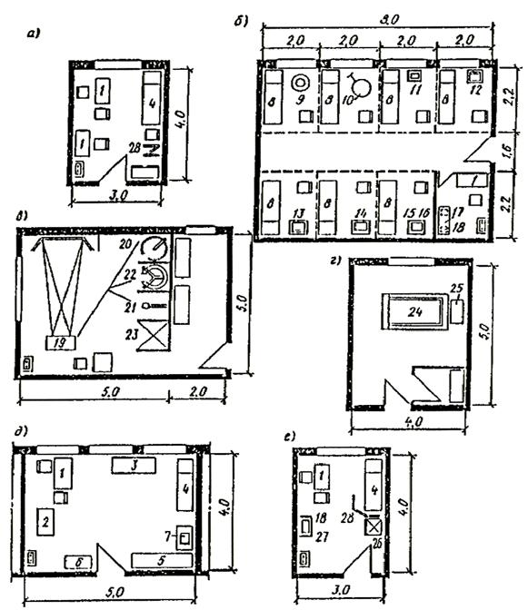
Рис. 17. Примеры планировок помещений медико-восстановительного центра (размеры в м)
а - кабинет врача (заведующего центром); б - кабинет электро- и светолечения; в - душевой зал; г - подводный душ-массаж; д - кабинет для проведения тестов с физической нагрузкой; е - процедурная; 1 - стол врача; 2 - электрокардиограф; 3 - спирограф; 4 - смотровая кушетка; 5 - велоэргометр; 6 - шкаф медицинский; 7 - фонограф; 8 - кушетка для электро- и светолечения; 9 - облучатель ультрафиолетовый; 10 - светотепловой облучатель; 11 - аппарат для УВЧ терапии; 12 - аппарат для ультразвуковой терапии; 13 - аппарат для электростимуляции мышц; 14 - облучатель ультрафиолетовый коротковолновый; 15 - аппарат для лечения диадинамическими токами; 16 - аппарат для магнитотерапии; 17 - шкаф сушильно-вытяжной; 18 - кипятильник-стерилизатор; 19 - пульт управления водолечебной кафедрой; 20 - душ циркулярный; 21 - душ дождевой; 22 - душ восходящий; 23 - душ гигиенический; 24 - ванна подводного душа-массажа; 25 - аппарат для подводного душа-массажа; 26 - холодильный шкаф; 27 - столик инструментальный; 28 - ширма переносная
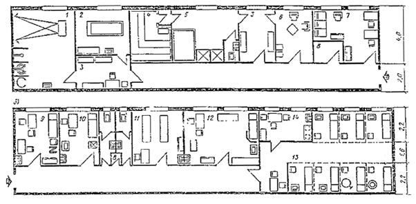
Рис. 18. Примеры блокировки помещений медико-восстановительного центра
а - схема блока водолечебных помещений медико-восстановительного центра; б - схема блока «сухих» помещений медико-восстановительного центра; 1 - душевой зал; 2 - подводный душ-массаж; 3 – раздевальня; 4 - камера бани сухого жара; 5 - душевая с ванной;: 6 - комната отдыха; 7 - комната персонала; 8 – кладовая; 9 - кабинет врача (заведующего центром); 10 – процедурная; 11 - массажноводный душ - массажная; 12 – кабинет для проведения тестов с физической нагрузкой; 13 - кабинет электро- и светолечения; 14 – помещение для обработки прокладок
3.61. Буфеты для занимающихся и зрителей должны предусматриваться во всех бассейнах.
В бассейнах микрорайонов, а также при пропускной способности бассейна менее 48 человек в смену в отдельных случаях буфеты для занимающихся могут заменяться стойкой для электросамовара с подсобным помещением для хранения и мытья чайной посуды площадью 4-8 м2.
При числе зрительских мест менее 600 в крытых бассейнах буфеты для зрителей могут в отдельных случаях предусматриваться на площади фойе переносными, а при числе зрительских мест менее 1200 в открытых бассейнах - на прилегающей территории - привозными.
3.62. Число мест в буфетах рекомендуется принимать:
а) для занимающихся - из расчета одно посадочное место на 6 человек пропускной способности в смену;
б) для зрителей - из расчета 3 % числа зрительских мест.
Зал буфета для зрителей оборудуется кафетерийными стойками для еды стоя.
3.63. Площади залов буфетов (с раздаточной) для занимающихся принимаются из расчета 3,4 м2 на каждое посадочное место при их числе до 8 и по 1,25 м2 на каждое место сверх 8 и до 30. При общем числе мест в зале свыше 30 - не менее чем по 1,8 м2 на каждое место.
Площади залов буфетов для зрителей (без учета раздаточной) принимаются не менее 1,4 м2 на место.
Площади подсобных помещений буфетов определяются применительно к требованиям по проектированию учреждений общественного питания.
При использовании территории открытых бассейнов для отдыха населения с размещением на ней ресторанов, кафе, закусочных их вместимость в расчет буфетов бассейна не входит.
3.64. Буфет для зрителей рекомендуется располагать не далее 150 м от наиболее удаленного места на трибуне.
В открытых бассейнах стационарные буфеты для зрителей располагаются, как правило, в открытом подтрибунном пространстве, на верандах и т. п., а их подсобные - в помещениях.
3.65. В буфетах для занимающихся следует предусматривать оборудование для отпуска горячих блюд, доставляемых из других предприятий общественного питания.
3.66. Сотрудники, как правило, пользуются буфетами для занимающихся. При большом числе сотрудников в отдельных случаях предусматривается служебная столовая, проектируемая по нормам для предприятий общественного питания; в расчет буфетов для занимающихся или зрителей служебная столовая не входит.
3.67. Помещения для судей и пресс-центра предусматриваются в демонстрационных бассейнах, предназначенных для проведения всесоюзных и международных соревнований.
3.68. Помещения для судей включают: кабинет главного судьи - 10-12 м2; комнату судейской коллегии - 16-20 м2, комнату секретариата - 16-20 м2; машинописное бюро - 8-12 м2; комнату множительной техники - 10-12 м2.
Бригаде судей по награждению требуется холл для сбора победителей и призеров, рабочая комната гравера площадью 8 м2, кладовая для хранения призов площадью 6-8 м2.
3.69. Примерный состав пресс-центра и схема функциональных связей помещений приведены на рис. 19. Площади помещений определяются в каждом отдельном случае.
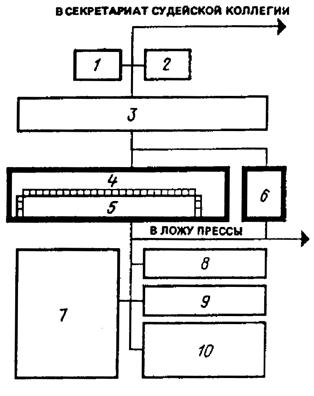
Рис. 19. Примерный состав пресс-центра и схема функциональных связей помещений
1 - машинописное бюро; 2 - множительная техника; 3 - рабочие помещения сотрудников; 4 - помещение раскладки материалов; 5 - помещение получения материалов; 6 - руководитель пресс-центра; 7 - рабочее помещение корреспондентов; 8 - междугородный переговорный пункт; 9 - телетайпная; 10 - пресс-бар
Машинописное бюро и помещение множительной техники могут предусматриваться общими для пресс-центра и секретариата судейской коллегии.
В качестве помещений для судей и прессы могут использоваться учебные классы (методические кабинеты), комнаты администрации, тренерские, комнаты ДСО, спортивных школ и другие помещения, не используемые во время соревнований.
3.70. Состав и площади мастерских по ремонту оборудования и инвентаря, а также для других эксплуатационных нужд определяются заданием на проектирование.
3.71. Помещения для уборочного инвентаря располагаются сосредоточенно, поэтажно, а их площади определяются из расчета 4 м2 на каждые 1000 м2 площади пола.
3.72. Помещение для пожарного поста принимается в крытых бассейнах площадью 24 м2 при вместимости трибун более 2 тыс. мест и 15 м2 при вместимости трибун от 1 до 2 тыс. мест. При вместимости трибун менее 1 тыс. мест пожарный пост не предусматривается.
3.73. Помещение охраны общественного порядка из двух смежных комнат по 10-12 м2 предусматривается в демонстрационных бассейнах с трибунами вместимостью более 1,5 тыс. мест. Размещается в удобной связи с вестибюлем для зрителей и трибунами.
3.74. В бассейнах с несколькими ваннами вестибюль, гардеробные верхней одежды, буфет, помещения для отдыха занимающихся, учебные классы (методические кабинеты), а также бытовые помещения для рабочих и служебные помещения административного персонала и технических служб предусматриваются, как правило, общими для всего бассейна.
3.75. В составе зданий оздоровительных бассейнов допускается дополнительно предусматривать помещения досугового и медицинского назначения. Состав и площади этих помещений определяются заданием на проектирование в зависимости от пропускной способности бассейна и местных условий.
3.76. Высота вспомогательных помещений принимается, как правило, равной 3 м.
В зависимости от архитектурно-планировочного решения и технологических требований, а также при размещении вспомогательных помещений в подтрибунном пространстве высота помещений может быть уменьшена до:
2,1 м - в помещениях гардеробной верхней одежды;
2,7 м - в остальных помещениях, кроме вестибюлей.
3.77. Состав, площадь и высота технических помещений определяются в зависимости от принятого инженерного оснащения бассейна.
3.78. Хлораторную площадью 8-10 м2 и склад хлора (6 м2) для хранения не более двух наполненных баллонов емкостью по 40 кг каждый допускается размещать у наружной стены здания бассейна, выше уровня земли, с отделением от других помещений ограждающими конструкциями из несгораемых материалов с пределом огнестойкости не менее 0,75 ч.
Помещения хлораторной и склада хлора должны иметь непосредственные или через тамбур выходы на улицу. Допускается устройство общего тамбура для выхода из обоих помещений наружу.
Над помещениями для приготовления дезинфицирующих и коагулирующих растворов не допускается располагать санитарные узлы и душевые.
3.79. Залы ванн и залы подготовительных занятий должны иметь прямое естественное освещение. Площадь световых проемов определяется в процентах от площади пола зала и составляет:
для залов ванн (включая площадь зеркала воды) при одностороннем боковом освещении - 14-16 %, при двух- и многостороннем боковом освещении - 12-13 %;
для залов подготовительных занятий при одностороннем боковом освещении - 17 %; при двух- и многостороннем боковом освещении - 14 %.
В помещениях и залах ванн для физкультурно-оздоровительных занятий, а также для обучения не умеющих плавать площадь световых проемов в зависимости от местных условий принимается в пределах 12-17 % площади пола помещения (включая площадь зеркала воды).
3.80. Световые проемы вдоль стен и потолка для обеспечения равномерности освещения рекомендуется принимать ленточными; при двухстороннем боковом освещении световые проемы рекомендуется располагать равномерно вдоль каждой из стен, исходя из условия, что площади световых проемов в противоположных стенах могут различаться не более чем вдвое.
Световые проемы не рекомендуется размещать ниже 2 м от уровня обходной дорожки. Пространство внутри витража должно позволять размещение стремянок и людей для мытья стекол.
3.81. Ориентацию световых проемов в залах крытых ванн и залах для подготовительных занятий при одностороннем боковом освещении рекомендуется принимать в районах севернее 48° северной широты, как правило, на юго-восток. При устройстве световых проемов бокового освещения с двух и более сторон стену с наибольшей площадью проемов ориентируют в районах севернее 48° северной широты на юго-восток, а в районах южнее 48° северной широты - на северо-восток.
Ориентация световых проемов помещений и залов ванн для физкультурно-оздоровительных занятий, а также для обучения не умеющих плавать не регламентируется.
3.82. Защитные меры от слепящего действия солнечных лучей следует предусматривать в случаях, если световые проемы размещаются напротив стационарной трибуны для зрителей или напротив устройств для прыжков в воду.
3.83. В залах ванн большую часть световых проемов рекомендуется предусматривать с фрамугами и форточками.
3.84. Площадь световых проемов во вспомогательных помещениях спортивных и физкультурно-оздоровительных бассейнов, в которых предусматривается естественное освещение, рекомендуется принимать по табл. 8.
Таблица 8
|
Наименование помещений« |
Площадь световых проемов, в процентах от площади пола |
|
Помещения для медицинского обслуживания* |
20 |
|
Учебный класс (методический кабинет) |
17 |
|
Мастерские |
14 |
|
Служебные помещения для административного и инженерно-технического персонала, помещение пожарного поста, склады спортивного оборудования и мебели**, хозяйственные кладовые** |
10-12 |
___________
* Комната дежурной медицинской сестры при крытых ваннах может освещаться вторым светом.
** В этих помещениях может быть только прямое естественное или искусственное освещение, освещение вторым светом не допускается.
Примечание. В помещениях, не приведенных в настоящей таблице, естественное освещение может не предусматриваться, а при его устройстве площадь световых проемов должна быть в пределах 10-12 % площади пола.
3.85. В залах крытых ванн и залах для подготовительных занятий время реверберации на частотах 500-2000 Гц следует принимать в пределах полосы, показанной на графике (рис. 20). На частотах ниже 500 Гц время реверберации допускается увеличивать на 15-20 %. Для залов ванн с местами для зрителей график приведен при 75 %-ном заполнении зрительских мест.
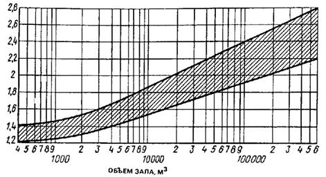
Рис. 20. График времени реверберации
Допустимые уровни звукового давления и эквивалентные уровни звука в дБА согласно табл. 9.
Таблица 9
|
Помещения |
Среднегеометрическая частота октавных полос, Гц |
Уровень звука дБА |
|||||||
|
63 |
125 |
250 |
500 |
1000 |
2000 |
4000 |
8000 |
||
|
Уровень звукового давления, дБ |
|||||||||
|
Залы ванн при использовании для синхронного плавания (с музыкальным сопровождением) |
71 |
61 |
54 |
49 |
45 |
42 |
40 |
38 |
50 |
|
Залы ванн и залы подготовительных занятий |
79 |
70 |
63 |
5» |
55 |
52 |
50 |
49 |
60 |
Расчет акустического благоустройства следует вести по СНиП II-12-77 «Защита от шума».
3.86. Для предотвращения влияния внешних источников шума помещения для отдыха занимающихся, учебные классы (методические кабинеты), помещения медицинского обслуживания, дикторские и комментаторские кабины рекомендуется располагать на удалении от вентиляционных камер, насосных и других источников шума. Кроме того, стены и потолки дикторских и комментаторских кабин требуют акустической обработки.
3.87. В залах ванн бассейнов желательно устройство звукопоглощающих потолков.
Подвесные акустические (звукопоглощающие) потолки можно устраивать по нижнему поясу ферм балок или на относе не менее 10 см от конструкции покрытия.
3.88. При проектировании зальных помещений с выпуклыми (купольными, сводчатыми, арочными) покрытиями для избежания концентрации звуковой энергии и фокусировки звука рекомендуется, чтобы радиус кривизны не менее чем в два раза был больше высоты помещения.
3.89. Для защиты мягкой фактуры звукопоглощающих материалов от механического повреждения применяются акустически-прозрачные экраны (перфорированные плиты, отверстия в которых составляют не менее 20 % поверхности, металлические сетки с ячейками 5 ´ 5 см и др.).
Звукопоглощающие материалы, рекомендуемые для применения в качестве акустических облицовок в залах ванн бассейнов, приведены в табл. 10.
Таблица 10
|
Наименование и марка материалов |
Плотность, кг/м3 |
Толщина слоя, мм |
|
Супертонкое стекловолокно щелочное |
15-20 |
50 |
|
Ультратонкое и супертонкое щелочное стекловолокно |
8-10 |
50 |
|
Супертонкое штапельное базальтовое волокно |
20-25 |
50 |
|
Холст СТВ |
8-10 |
50 |
4.1. Спортивные и физкультурно-оздоровительные бассейны должны оборудоваться системами хозяйственно-питьевого и противопожарного водопровода и канализации, присоединяемыми к наружным сетям населенного пункта.
При отсутствии в населенном пункте централизованного водоснабжения следует использовать местные источники, вода в которых удовлетворяет требованиям ГОСТ 2874-82*, или предусматривать устройство собственного водозаборного узла. Источники водоснабжения и степень очистки должны удовлетворять требованиям СНиП 2.04.02-84.
При недостаточном дебите местных водопроводов для заполнения ванн бассейнов допускается по согласованию с местными органами СЭС использовать воду открытых водоемов, разрешенных для купания. При заполнении ванн из таких источников возможно использование фильтровальных установок бассейна (при скоростях фильтрации не более 9 м/ч). После заполнения ванны параметры воды системой рециркуляции доводятся до требуемых п. 4.2 настоящего Пособия. Эксплуатация бассейна возможна только после полного биохимического анализа воды, проводимого органами санитарного надзора.
В неканализированных районах следует предусматривать местные очистные сооружения, состав которых и степень очистки должны быть согласованы с местными органами санитарного надзора.
4.2. Вода для хозяйственно-питьевых и технологических нужд спортивных и физкультурно-оздоровительных бассейнов должна удовлетворять требованиям ГОСТ 2874-82*. Кроме того, следует предусматривать меры, обеспечивающие воде, подаваемой в ванны бассейнов, следующие дополнительные качества:
а) цветность на более 5°;
б) содержание взвешенных веществ: в открытых ваннах - не более 2 мг/л, в крытых - не более 1 мг/л;
в) прозрачность по кресту - на всю глубину ванны.
Прозрачность по кресту должна обеспечивать отчетливую видимость с расстояния не менее 10 м белого диска диаметром 150 мм с черным крестом (толщина линии 1 см), помещенного в самой глубокой точке дна ванны.
4.3. Горячее водоснабжение следует предусматривать для обеспечения хозяйственно-бытовых и технологических нужд.
Для сокращения потребления тепла на нужды горячего водоснабжения объектов, расположенных в районах с большой солнечной активностью, рекомендуется предусматривать устройство солнечных аккумуляторов, рассчитывая их на максимальный расход горячей воды.
4.4. Горячая вода для хозяйственно-бытовых нужд должна соответствовать требованиям ГОСТ 2874-82*. Подводку горячей воды следует предусматривать к душевым, кабинету врача, комнатам медицинской сестры и для оказания первой медицинской помощи, массажным, бытовым помещениям для рабочих, раздевальням для занимающихся, комнатам инструкторов и тренеров, буфетам, лаборатории анализа воды, помещениям для уборочного инвентаря, а также к другим помещениям, в соответствии с технологическим заданием. На технологические нужды горячая вода должна подаваться для заполнения и подогрева воды ванн бассейнов, а также для эксплуатации буфетов.
4.5. Устройство внутреннего хозяйственно-питьевого и противопожарного водопровода и нормы расхода воды в сутки и часы максимального водопотребления, а также устройство канализации должны отвечать требованиям СНиП 2.04.01-85 с дополнительным учетом расходов потребителями согласно табл. 11. При подсчете суточного и максимального часового расхода следует учитывать количество и продолжительность смен.
Таблица 11
|
Наименование потребителя |
Норма расхода воды, л |
|||
|
в сутки наибольшего водопотребления |
в час наибольшего водопотребления |
|||
|
общее |
горячее |
общее |
горячее |
|
|
Тренеры и инструкторы |
100 |
60 |
9 |
5 |
|
Занимающиеся в бассейнах |
100 |
60 |
100* |
60* |
|
Обучающиеся плаванию дети до 14 лет |
60 |
35 |
60* |
35* |
|
Проходной ножной душ (1 душ) |
- |
- |
720 |
360 |
|
Мытье обходных дорожек, м |
6 |
3 |
- |
- |
|
Мытье трибун открытых бассейнов, м2 |
1 |
- |
- |
- |
|
Промывка фильтров, м2 площади фильтрации |
4000 |
- |
- |
- |
|
Пополнение (подпитка) ванн бассейнов при сбросе перелива в канализацию |
10 % объема воды в ванне |
Равномерно в течение рабочего времени |
||
|
Пополнение (подпитка) ванн бассейна при направлении перелива на очистку: |
||||
|
ванны объемом до 600 м3 |
5% объема воды в ванне |
То же |
||
|
ванны объемом свыше 600 м3 |
Не менее 50 л/чел. |
» |
||
__________
* Показан расход воды в смену.
При подсчете максимальных часовых и секундных расходов воды занимающимися допускается принимать следующие укрупненные показатели, учитывающие технологию водопотребления и продолжительность смен:
максимальные часовые расходы воды занимающимися определяются нормами расхода в час, умноженными на число занимающихся в смену и деленными на продолжительность смены, если она меньше часа;
максимальное секундное водопотребление занимающихся принимается исходя из одновременной работы всех сеток в душевых при раздевальнях;
максимальный секундный сброс воды в канализацию принимается равным секундному водопотреблению при его величине более 8 л/сек, а при меньшем водопотреблении к нему прибавляется 1,6 л/с.
Потребление воды на мытье трибун, обходных дорожек, а также персоналом и в буфетах учитывается отдельно. Расчет водопотребления в буфетах может быть выполнен как по количеству отпускаемых блюд, так и по количеству установленного технологического оборудования (моек).
4.6. Расходы горячей воды следует определять согласно требованиям СНиП 2.04.01-85.
Отдельно следует учитывать расходы горячей воды на следующие нужды:
проходной ножной душ перед выходом на обходную дорожку ванн с расходом 720 л/ч и температурой 30-35 °С (продолжительность работы - 30 мин в смену);
мытье обходных дорожек и душевых с расходом 6 л/м2 и температурой 30 °С (два раза в сутки).
4.7. В санитарных узлах и душевых с количеством приборов более двух (унитазов, писсуаров, душевых сеток) и на обходных дорожках ванн крытых и открытых бассейнов следует предусматривать установку поливочных кранов диаметром 20 мм с подводкой холодной и горячей воды.
Поливочные краны у обходных дорожек открытых ванн следует устанавливать в отапливаемых помещениях или в нишах с двойными утепленными дверцами.
4.8. У открытых и крытых ванн бассейнов допускается устраивать питьевые фонтанчики для занимающихся, устанавливаемые в пределах обходной дорожки.
4.9. Подача воды в ванны бассейнов может осуществляться через отверстия в стенках и дне ванн, расположение которых должно обеспечивать равномерное распределение ее по всему объему для поддержания постоянства ее температуры и бактерицидных качеств.
Для подачи воды в ванны бассейнов допускается использование перфорированных труб, укладываемых в теле уступа для отдыха под облицовкой (без изменения отметки верха уступа).
Скорость выхода воды из подающих отверстий следует принимать 2-3 м/с.
4.10. Расчетную температуру воды в ваннах бассейнов следует принимать согласно табл. 12.
Таблица 12
|
Назначение ванны |
Расчетная температура воды в ваннах, °С |
||
|
открытых |
крытых |
||
|
летом |
зимой |
||
|
Спортивное плавание, водное поло, купание и игры в воде, оздоровительное плавание |
27* |
28 |
26* |
|
Прыжки в воду |
29 |
- |
28 |
|
Обучение не умеющих плавать |
29 |
- |
29 |
____________
* В бассейнах с трибунами для зрителей следует на время проведения соревнований предусматривать снижение температуры воды в ванне на 2 °С.
Температура воды, подаваемой в ванны, не должна превышать 35 °С. В ваннах при банях сухого жара температура воды, подаваемой через смеситель, принимается в пределах до 20 °С.
4.11. Продолжительность наполнения ванн бассейнов не должна превышать 24 ч.
При недостаточных дебитах водоисточника и соответствующем технико-экономическом обосновании допускается увеличение времени наполнения ванн, оборудованных системами рециркуляции, до 48 ч. Система рециркуляции при этом должна работать постоянно.
4.12. Водообмен в ваннах бассейнов следует предусматривать с рециркуляцией воды (многократное использование с очисткой, дезинфекцией и одновременным пополнением убыли свежей водопроводной водой в пределах до 10 % объема воды в ванне) или с непрерывным протоком свежей воды (разовое использование с дезинфекцией). При этом продолжительность полной смены воды (водообмена) в ваннах для обучения не умеющих плавать детей 7-14 лет должна приниматься не свыше 8 ч, а в остальных ванных - не свыше 12 ч.
Выбор метода водообмена определяется технико-экономическим расчетом.
Систему водообмена непрерывным протоком рекомендуется применять, как правило, в ваннах с объемом воды не более 70 м3. При этом предварительную дезинфекцию допускается проводить с помощью медицинских капельниц (ПК 11-01) или «Кружкой Эсмарха» со стеклянным ирригатором емкостью 1,5 л (рис. 21, 22).
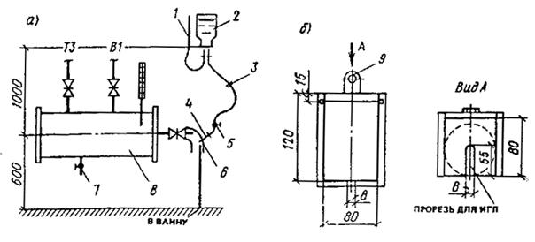
Рис. 21. Схема введения реагента с применением капельницы 11-01 (расходы раствора до 1 л/сут)
а - схема устройства узла ввода; б - подставка под баллон; 1 – воздух; 2 - баллон емкостью 450 мл; 3 - фильтр; 4 – игла; 5 - зажим; 6 - резиновый шланг; 7 – слив; 8 - смеситель, 9 - крепление
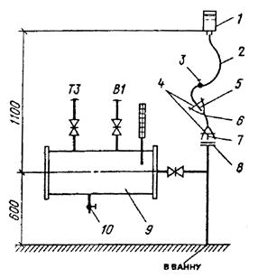
Рис. 22. Схема введения реагента с применением «Кружки Эсмарха» (расход раствора до 3 л/сут)
1 - ирригатор емкостью 1,5л (стеклянный); 2 - шланг; 3 - зажим; 4 - проволочная скрутка; 5 – наконечник; 6 - трубка резиновая Æ = 8 мм; 7 - штуцер Æ = 10 мм, 8 - глухой фланец Æ = 10 мм; 9 - смеситель; 10 - слив
Проходные ножные души следует предусматривать с непрерывным потоком воды.
4.13. Очистку технологической воды ванн бассейнов следует предусматривать фильтрами с предварительной коагуляцией в соответствии с требованиями СНиП 2.04.01-85.
Перед очистными сооружениями следует устанавливать сетчатые фильтры (волосоуловители).
Водоочистные сооружения в бассейнах следует предусматривать раздельно для каждой ванны или для группы ванн одинакового назначения и возраста занимающихся в них.
Средние скорости фильтрации в механических скорых фильтрах рекомендуется назначать до 18 м/ч.
Крупность фракций загрузочного материала от 0,6 до 1,6 мм.
В качестве загрузочных материалов наряду с кварцевым песком допускается применять дробленый керамзит, антрацит марки АС-мытое, горелые породы и другие материалы, разрешенные Минздравом СССР для систем питьевого водоснабжения.
Разрешается применение намывных фильтров с применением в качестве фильтрующего материала перлита или диатомита с фракциями от 2 до 10 мм.
Учитывая, что в воде ванн бассейнов содержится в основном тонкодисперсная взвесь, коагуляция перед фильтрованием обязательна. Доза коагулянта зависит от качества воды и назначается в пределах от 0,1 до 0,5 мг/л (большие дозы для открытых ванн).
4.14. Дезинфекция воды, подаваемой в ванны, должна производиться препаратами хлора или брома, обладающими высоким бактерицидным эффектом и обеспечивающими остаточное бактерицидное последствие. В качестве дезинфицирующих веществ допускается применять газообразный хлор, двутреть-основную соль гипохлорита кальция ДТСГК, гипохлорит лития, натриевую соль дихлоризоциануровой кислоты ДХЦЕ, гипохлорит натрия марки А, дибромантин. Дезинфекция физическими методами допускается только в сочетании с химическими.
При отсутствии гарантированных поставок обеззараживающих веществ для их получения допускается установка электролизеров непроточного или проточного типов.
В качестве дезинфектанта допускается применение хлорной извести. Для борьбы с хлороустойчивыми формами бактерий и водорослями рекомендуется периодическая (раз в неделю) обработка воды ванн бассейнов раствором медного купороса (доза 2-3 мг/л).
Раствор дезинфицирующих реагентов должен вводиться в трубопровод рециркуляционной системы перед сетчатыми фильтрами, а при непрерывном протоке - перед впуском воды в ванну.
Количество дезинфицирующего раствора, вводимого в воду, следует принимать из расчета поддержания постоянной концентрации в ванне бассейна 0,2-0,3, но не св. 0,5 г/м3 остаточного хлора или 0,7-1,5 г/м3 брома. При интенсивной дневной нагрузке допускается повышение содержания остаточного хлора в ночное время до 1,5 г/м3, брома - 2 г/м3 с обязательным снижением до уровня, приведенного выше, к началу пользования ванной. При содержании хлора и брома выше допустимого уровня допускается нейтрализация 1 %-ным раствором гипосульфита натрия.
При расчете оборудования для создания в воде необходимой концентрации активного хлора (0,3-0,5 мг/л) рекомендуется исходить из следующих предварительных доз вводимых реагентов (в расчете на количество воды, подаваемой в ванны):
обеззараживание газообразным хлором - 1,5 мг/л;
обеззараживание гипохлоритами - 1 мг/л (в пересчете на активный хлор);
обеззараживание дибромантином - 2 мг/л.
Склады для хранения реагентов в виде порошкообразных веществ должны рассчитываться на месячное потребление.
4.15. На технологических трубопроводах в бассейнах следует предусматривать установку:
расходомеров, показывающих количество воды, подаваемой в ванну;
расходомеров, показывающих количество свежей водопроводной воды, поступающей в рециркуляционную систему;
контрольных кранов для отбора проб до и после фильтров.
Для насосно-фильтровальных установок, располагаемых ниже поверхности воды в ваннах, на технологических трубопроводах, подающих осветленную воду, следует устанавливать обратные клапаны, исключающие слив воды из ванн в технические помещения при разгерметизации фланцевых соединений у арматуры и оборудования.
4.16. Во всех ваннах, оснащенных устройствами для прыжков, на поверхности воды под ними следует предусматривать создание искусственной ряби.
Для создания ряби предусматривается обычно подача воздуха из перфорированных труб, укладываемых по дну или в теле дна ванн. Рекомендуется дублирование подачи воздуха для создания ряби устройством струйной подачи воды (из контура рециркуляции) на поверхность воды.
В ваннах меньших размеров допускается уменьшение части универсальных ванн, под десятиметровой платформой вышки и одним из трехметровых трамплинов устраивается водовоздушная подушка путем установки компрессора с ресиверами или турбокомпрессора с непосредственной подачей воздуха к распределительной гребенке. Ориентировочный расход воздуха 1 м3/с.
4.17. Отвод воды из ванн бассейнов на рециркуляцию может предусматриваться как через переливные желоба, так и через отверстия в дне, располагаемые в глубокой и мелкой частях ванн. Расчетную скорость входа воды в отводящие отверстия, перекрытые решетками, следует принимать 0,4 - 0,5 м/с. Сброс воды из переливных желобов ванн (если он не осуществляется на рециркуляцию), от проходных ножных душей, с обходных дорожек и от мытья стенок и дна ванн бассейнов следует предусматривать в бытовую канализацию. Вода от питьевых фонтанчиков или питьевых автоматов, от опорожнения ванн, от промывки фильтров должна удаляться в дождевую канализацию; в отдельных случаях по согласованию с местными органами водопроводно-канализационного хозяйства допускается сброс воды в бытовую канализацию. При сбросе воды от промывки фильтров в бытовую канализацию в приемном колодце надлежит устраивать гидрозатвор высотою 400 мм.
В ваннах со стенками, не выступающими над уровнем воды для разделения воды от перелива через стенку ванны и стоков грязной воды от мытья обходной дорожки рекомендуется профиль борта ванны, приведенный на рис. 23.
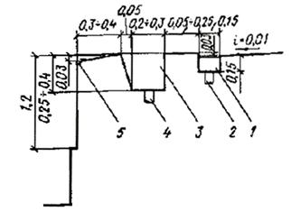
Рис. 23. Схема борта ванны с раздельным отводом воды: из ванны - на очистку с обходных дорожек - в канализацию
1 - грязевой желоб; 2 - отвод воды в канализацию; 3 - переливной желоб; 4 - отвод воды на очистку; 5 - желоб
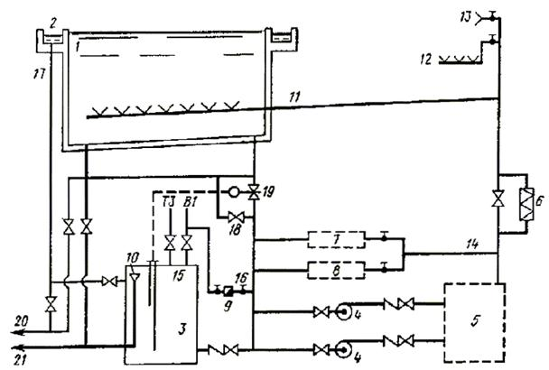
Рис. 24. Принципиальная схема водоподготовки с забором воды на рециркуляцию из переливного желоба (с баком-аккумулятором)
1 - ванна; 2 - переливной желоб (лоток); 3 - бак-аккумулятор; 4 - насосы циркуляционные; 5 - блок фильтров; 6 - теплообменник; 7 - блок приготовления и дозирования коагулянта; 8 - блок приготовления и дозирования дезинфектанта; 9 - водомер; 10 - датчик уровня; 11 - подача воды в ванну; 12 - подача воды к проходному ножному душу; 13 - подача воды к поливочным кранам на обходной дорожке и в душевых; 14 - подача воды на приготовление реагентов; 15 - заполнение системы; 16 - подпитка исходной водой; 17 - слив из желоба в бак; 18 - забор 50 % циркуляционного расхода из ванны; 19 - забор 100 % циркуляционного расхода из ванны при опорожнении бака; 20 - сброс в канализацию при мытье желоба и ванны; 21 - сброс в водосток при опорожнении
4.18. При сбросе воды из переливных желобов ванн в общую рециркуляционную систему допускается соответственное уменьшение объема свежей воды, подаваемой в ванну для ее пополнения.
При заборе воды из переливных желобов на рециркуляцию допускается, чтобы ее объем в открытых бассейнах составлял до 70 %, а в крытых - до 50 % общего рециркуляционного расхода. Для хранения воды периодически вытесняемой занимающимися и ее волновым переливом устанавливается бак-аккумулятор (рис. 24). При этой схеме исключается образование поверхностной пленки загрязнений, а подача подпиточной воды осуществляется равномерно в течение суток.
Минимальное сечение переливного желоба S, проектируемого без уклона, определяется по формуле, м2:
во всех ваннах, кроме ванн для обучения не умеющих плавать
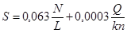
в ваннах для обучения не умеющих плавать:
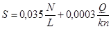
где N - количество одновременно занимающихся; L - длина переливного желоба, м; Q - циркуляционный расход, м3/ч; п - число сливных отверстий; k = 1 при одностороннем подходе воды к сливному отверстию; k = 2 при двухстороннем подходе воды к сливным отверстиям.
Для сокращения общего расхода воды на технологические нужды в случае установки бака-аккумулятора избыток подпиточной воды (после потерь испарением, уноса пловцами и разбрызгивания) допускается использовать на нужды других технологических потребителей.
Вода из рециркуляционного контура, прошедшая обеззараживание, коагуляцию и осветление, может использоваться для промывки фильтров, а после подогрева - для мытья обходных дорожек и полов душевых при ваннах, а также в проходных ножных душах. При этом объем подпитки равен сумме расходов всеми потребителями, но не менее 5 % объема для средних ванн (до 600 м3) и не менее чем 50 литров на каждого занимающегося в сутки для ванн объемом более 600 м3.
Потери воды на испарение Q, унос и разбрызгивание в крытых ваннах могут определяться укрупненно по формулам:
во всех ваннах, кроме ванн для обучения не умеющих плавать
Q = 0,0064 F, м3/сут; qчас = 0,0003 F, м3/ч;
в ваннах для обучения неумеющих плавать
Q = 0,0083 F, м3/сут; qчас = 0,0004 F, м3/ч,
где F - площадь зеркала воды, м2.
Расход воды Qi, м3/сут, на промывку фильтров определяется по формуле:
Qi =4,2Fфn,
где Fф - площадь фильтра, м2; п - количество промываемых фильтров в сутки.
Расход воды Q1, м3/сут, на мытье обходных дорожек и душевых при ванне определяется по формуле (две уборки в сутки):
Q1 = 0,012 Fд,
где Fд - площадь убираемых помещений, м2.
4.19. Продолжительность стока воды при опорожнении ванн бассейнов объемом 600 м3 и менее следует принимать не св. 12 ч, а при объеме воды более 600 м3 - не св. 24 ч.
При незначительной пропускной способности водосточных сетей и сооружений продолжительность опорожнения ванн объемом 600 м3 и менее может быть увеличена до 24 ч/
Необходимость опорожнения ванн определяется по данным химико-биологических анализов и заключению органов СЭС.
Опорожнение производится после обработки воды повышенными дозами дезинфектанта, отстоя и последующего дехлорирования. В этом случае вода может использоваться на полив, уборку территории и т. п.
4.20. Присоединение канализационных трубопроводов к ваннам бассейнов должно исключать возможность обратного попадания стока и запаха из канализации в ванны.
4.21. Выпуски, отводящие воду из переливных желобов ванн и проходных ножных душей бассейнов, должны иметь воздушные разрывы перед гидравлическим затвором.
4.22. Отвод воды с трибун открытых бассейнов следует предусматривать в сеть дождевой канализации.
При наличии в населенном пункте только общесплавной канализации подключение производится в колодце с устройством гидрозатвора высотой 400 мм.
4.23. В санитарных узлах для занимающихся и зрителей следует устанавливать напольные керамические унитазы или напольные чаши со смывным краном.
4.24. На обходных дорожках крытых и открытых ванн, а также в санитарных узлах и душевых для занимающихся, в которых предусмотрена установка поливочных кранов, для отвода стоков устраивают трапы диаметром 100 мм. Число трапов принимается в душевых и уборных из расчета один трап на 3 прибора. В душевых при комнатах для инструкторского и тренерского состава, а также при бытовых помещениях для рабочих устанавливаются душевые поддоны.
5.1. Расчетная температура и кратность обмена воздуха в бассейнах принимается согласно табл. 13.
5.2. Подвижность воздуха в зонах нахождения занимающихся не должна превышать:
0,2 м/с - в залах ванн бассейнов (в том числе для оздоровительного плавания и обучения не умеющих плавать);
0,5 м/с - в залах для подготовительных занятий.
5.3. Относительную влажность воздуха рекомендуется принимать:
50-65 % - в залах ванн бассейнов;
30-60 % - в залах для подготовительных занятий.
Нижние пределы относительной влажности приведены для холодного периода года при температурах, указанных в табл. 13.
Таблица 13
|
Помещение |
Расчетная температура воздуха, °С |
Кратность обмена воздуха в 1 ч |
|
|
приток |
вытяжка |
||
|
Залы ванн бассейнов (в том числе для оздоровительного плавания и обучения не умеющих плавать) с местами для зрителей или без них* |
На 1-2° выше температуры воды в ванне, приведенной в табл. 12 |
По расчету, но не менее 80 м3/ч наружного воздуха на одного занимающегося и не менее 20 м3/ч на одного зрителя |
|
|
Залы для подготовительных занятий |
18 |
По расчету, но не менее 80 м3/ч на одного занимающегося |
|
|
Мастерские, насосно-фильтровальные |
16 |
2 |
3 (в мастерских местные отсосы по заданию на проектирование) |
|
Вестибюли для занимающихся |
20 |
2 |
- |
|
Гардеробная верхней одежды для занимающихся и зрителей (обособленная от вестибюля) |
16 |
- |
2 |
|
Раздевальни (в том числе при массажных и банях сухого жара |
25 |
По балансу с учетом душевых |
2 (из душевых) |
|
Душевые |
25 |
5 |
10 |
|
Массажные |
22 |
4 |
5 |
|
Камера бани сухого жара |
120** |
- |
5 (периодического действия при отсутствии людей) |
|
Учебные классы, методические кабинеты, комнаты инструкторского и тренерского состава, судей, прессы, административного и инженерно-технического состава |
18 |
3 |
2 |
|
Помещения для отдыха занимающихся |
22 |
3 |
3 |
|
Санитарные узлы: |
|||
|
общего пользования (для зрителей) |
16 |
- |
100 м3/ч на 1 унитаз или писсуар |
|
для занимающихся (при раздевальнях) |
20 |
- |
50 м3/ч на 1 унитаз или писсуар |
|
индивидуального пользования |
16 |
- |
25 м3/ч на 1 унитаз |
|
Умывальни при санитарных узлах общего пользования |
16 |
- |
За счет санитарных узлов |
|
Инвентарные при залах подготовительных занятий |
15 |
- |
1 |
|
Бытовые помещения для рабочих, комнаты охраны общественного порядка, лаборатории анализа воды |
18 |
2 |
8 (в лаборатории местные отсосы - по заданию на проектирование) |
|
Кладовые и складские помещения: |
|||
|
с постоянным пребыванием обслуживающего персонала |
16 |
- |
2 |
|
с кратковременным пребыванием обслуживающего персонала |
10 |
- |
1 |
|
Хлораторные |
16 |
10 |
12 |
|
Склады: |
|||
|
реагентов, хозяйственных химикатов и красок хлора |
10 5 |
- 10 |
2 1 2 |
|
Помещение для приготовления дезинфицирующих растворов (в том числе дибромантина) |
16 |
3 |
3 |
|
Хлораторные с применением электролизных установок напорного типа (с электролизом циркуляционной воды) |
16 |
2 |
2 |
|
Помещения для сушки спортивной одежды |
22 |
2 |
2 |
____________
* Решение системы воздухообмена в залах ванн бассейнов должно исключать образование застойных зон при преобладании вытяжки над притоком в объеме не более 0,5-кратного обмена. Расчетная температура в зоне нахождения зрителей может быть снижена до 20 °С.
** Обеспечивается технологическим оборудованием заводского изготовления от самостоятельного источника энергии.
Примечания: 1. В помещениях, не указанных в таблице, температура воздуха и кратность воздухообмена принимается по требованиям соответствующих норм. 2. Расчетное число зрителей в зале при проектировании систем вентиляции следует принимать исходя из 100 % заполнения зрительских мест. 3. Расчетная температура воздуха приведена для рабочего времени в холодный период года; в теплый период года температура в помещениях не должна выходить за пределы допустимой в соответствии с требованиями действующей главы СНиПа по проектированию отопления, вентиляции и кондиционирования воздуха.
При теплотехническом расчете ограждающих конструкций залов ванн бассейнов относительную влажность следует принимать 67 %, а температуру плюс 27 °С.
При применении клеедеревянных конструкций в зоне их расположения должна круглосуточно и круглогодично обеспечиваться относительная влажность не менее 45 %, а температура не должна превышать плюс 35 °С.
5.4. В залах ванн бассейнов с местами для зрителей расчет воздухообмена следует производить для двух режимов - со зрителями и без них.
5.5. Нагревательные приборы и трубопроводы в залах ванн бассейнов (в том числе для оздоровительного плавания и обучения не умеющих плавать) и залах для подготовительных занятий не должны выступать из плоскости стен на высоту до 2 м от пола. Кроме того, во всех помещениях, где пребывают люди с обнаженным телом, размещение нагревательных приборов и трубопроводов отопления должно исключать возможность получения ожогов. В помещениях с влажным и мокрым режимом устройство ниш в наружных стенах для размещения нагревательных приборов не допускается. В случаях когда элементы вентиляционных систем (воздуховоды, решетки), а также нагревательные приборы и трубопроводы выступают из плоскости стен или вынужденно устанавливаются на высоте до 2 м от пола, они закрываются щитами или иными средствами, исключающими ожоги и другие возможные травмы занимающихся. Конструкция защитных устройств не должна снижать функциональные качества отопительно-вентиляционных систем.
5.6. Самостоятельные системы приточной и вытяжной вентиляции следует предусматривать для:
залов ванн бассейнов (в том числе для оздоровительного плавания и обучения не умеющих плавать);
залов для подготовительных занятий;
душевых, раздевальнях для занимающихся, массажных и помещений для отдыха занимающихся;
служебных помещений для административного и инженерно-технического персонала, инструкторско-тренерского состава, бытовых помещений для рабочих;
хлораторных и складов хлора;
технических помещений (насосно-фильтровальных, бойлерных и др.).
Для залов ванн рекомендуется подбирать вентиляционные установки из расчета их работы в двух режимах: самостоятельные приточные и вытяжные установки, предназначенные только для нерабочего периода бассейнов, и дополнительные установки, которые совместно с первыми должны в период работы бассейнов обеспечить расчетный воздухообмен.
Удаление воздуха из залов ванн бассейнов следует, как правило, предусматривать вытяжными системами с механическим побуждением, в залах подготовительных занятий допускаются системы с естественным побуждением.
Для удаления воздуха из залов подготовительных занятий с вытяжными системами с естественным побуждением рекомендуется использовать обычные вентиляционные шахты, устанавливаемые непосредственно на кровле зала. Вытяжные шахты оборудуются утепленными клапанами с электроподогревом и дистанционным управлением, а также поддонами для сбора и удаления конденсата. К клапанам и поддонам обеспечивается удобный доступ обслуживающего персонала. Размеры внутреннего сечения шахт определяются по расчету с учетом гравитационного и ветрового напора и давления, создаваемого приточной вентиляцией.
Систему вытяжной вентиляции из санитарных узлов допускается объединять с системой вытяжной вентиляции из душевых. Компенсация вытяжки из помещений душевых осуществляется за счет дополнительного притока воздуха из помещений раздевален, куда предусматривается организованная подача воздуха в пятикратном объеме душевых, но не менее двухкратного объема раздевальни. Удаление воздуха из раздевален предусматривается в двухкратном объеме через помещения душевых. В случаях когда количество воздуха, удаляемого из душевых (с учетом помещений раздевален), превышает десятикратный воздухообмен, разница объемов воздуха удаляется непосредственно из помещения раздевален.
Если раздевальни для занимающихся (с душевыми при них) объединены с другими помещениями общей системой приточной вентиляции с расчетной температурой приточного воздуха ниже 25 °С, то для них предусматривается отдельная ветвь воздуховодов, на которой устанавливается зональный подогреватель. Если же температура приточного воздуха в системе равна 25 °С (т. е. расчетной для раздевальни), то на воздуховоде в раздевальню зональный подогреватель не предусматривается, а для остальных помещений, требующих более низкой температуры воздуха в холодный период года, расчетную величину теплопотерь на отопление этих помещений уменьшают на величину перегрева приточного воздуха.
5.7. В залах ванн рекомендуются системы воздушного отопления, совмещенные с системами вентиляции воздуха. В таких системах допускается применение рециркуляции воздуха. При этом объем подаваемого наружного воздуха не должен быть менее указанного в табл. 13.
В бассейнах могут применяться комбинированные системы центрального водяного и воздушного отопления.
5.8. Вентиляцию помещений хлораторных и складов хлора следует предусматривать периодического действия. Удаление воздуха осуществляется из двух зон: верхней в объеме 1/3 и нижней - 2/3 общего объема вытяжки. Вентиляционные агрегаты необходимо размещать вне этих помещений. Управление агрегатами осуществляется дистанционно от пусковых устройств, устанавливаемых непосредственно у входа в помещения.
5.9. Помещения приточных систем рекомендуется размещать в подвальных или цокольных этажах (на грунте) так, чтобы протяженность трасс воздуховодов была минимальной. В исключительных случаях, когда не представляется возможным разместить эти помещения в нижних этажах, допускается их размещение вне пределов основного здания (в том числе в отдельном или пристроенном помещении или в верхних этажах). В первом случае предусматриваются переходы, соединяющие технические помещения с основным объемом здания (с прокладкой в них каналов), во втором - предусматриваются мероприятия по вибро-, звуко-, и гидроизоляции, а также устройство эксплуатационных проходов и проемов для демонтажа и замены оборудования.
В помещениях, предназначенных для оборудования приточных систем, допускается устройство вводов теплоносителя, бойлерных и водяных насосных.
6.1. Искусственное освещение предусматривается во всех помещениях и на участках территории бассейнов, предназначаемых для прохода людей и движения транспорта, а также в открытых ваннах круглогодичного действия.
6.2. Уровень освещенности ванн бассейнов в зависимости от назначения по видам спорта принимается по табл. 14.
Уровень освещенности территории бассейнов принимается по СНиП II-4-79 «Естественное и искусственное освещение».
Таблица 14
|
Вид спорта, для которого предназначена ванна |
Наименьшая освещенность* |
Плоскость или зона, в которой нормируется освещенность |
|
Плавание (спортивное и оздоровительное), обучение не умеющих плавать |
100 150 |
Горизонтальная, на поверхности воды |
|
Прыжки в воду |
100 150 |
Горизонтальная, на поверхности воды |
|
- 75 |
Вертикальная, в зоне прыжков |
|
|
Водное поло |
100 200 |
Горизонтальная, на поверхности воды |
|
- 100 |
Вертикальная, на высоту до 2 м от поверхности воды |
___________
* Над чертой приведена норма для открытых, под чертой - для крытых ванн.
Примечания: 1. При размещении в микрорайонах допускается понижение уровня освещенности открытых бассейнов на одну ступень по шкале значений освещенности.
2. Вертикальная освещенность должна быть обеспечена с обеих сторон плоскости, проходящей через продольную ось поля для водного поло или через продольные оси устройств для прыжков в воду.
3. Освещенность универсальных ванн принимается по наибольшим показателям.
4. В залах ванн с трибунами вместимостью до 800 зрителей уровень горизонтальной освещенности следует повышать на одну ступень. При большей вместимости трибун в крытых и при вместимости более 3000 в открытых бассейнах горизонтальную освещенность рекомендуется принимать 400 лк, а вертикальную 200 лк.
5. При освещении залов ванн лампами накаливания уровень освещенности может быть снижен на одну ступень.
6.3. В крытых демонстрационных бассейнах с трибунами св. 3 тыс. зрителей, а также в других случаях, когда предусматриваются передачи цветного телевидения, осветительные установки должны обеспечивать уровень освещенности согласно табл. 15.
Таблица 15
|
Освещаемый объект |
Наименьшая освещенность*, лк |
Плоскость или зона, в которой нормируется освещенность |
|
Зеркало воды ванны |
1000 |
Вертикальная по продольной и поперечной оси ванны. Горизонтальная** на поверхности воды |
|
Трибуна*** |
500**** |
Вертикальная в направлении телевизионной камеры, на высоте 1 м |
_____________
* Коэффициент запаса осветительных установок следует принимать 1.2.
** Отношение горизонтальной освещенности к вертикальной должно приниматься не более 3 : 1.
*** Неравномерность освещенности трибуны (с плавным переходом от одного уровня к другому) допускается не более 1 : 3 (в сторону снижения от приведенного в табл. 15).
**** Освещенность зон показа зрителей крупным планом должна быть увеличена до 750 лк. Эти зоны определяются заданием на проектирование, но не должны превышать 20 % площади трибуны.
Проектирование этих установок осуществляется по заданиям местных органов Гостелерадио, согласованным с Гостелерадио СССР. Осветительные установки, необходимые для обеспечения освещенности, требуемой при передачах цветного телевидения, должны проектироваться, как правило, стационарными. По согласованию с местными органами Гостелерадио СССР допускаются полустационарные осветительные установки; в этих случаях должны быть предусмотрены электрическое подключение их, а также специальные элементы крепления установок на время телевизионных передач.
При проектировании осветительной установки, обеспечивающей уровни освещенности, требующиеся для проведения цветных телепередач, необходимо из общего числа светильников выделять приборы, обеспечивающие нормируемые уровни освещенности, предусмотренные в табл. 14. Эти приборы должны управляться отдельно от остальных приборов осветительной установки.
6.4. Электроприемники спортивных и оздоровительных бассейнов по надежности электроснабжения относятся к следующим категориям:
в крытых бассейнах без мест для зрителей (или при их числе менее 300):
а) при числе занимающихся 120 чел. и менее в смену все электроприемники - III категории;
б) при числе занимающихся более 120 чел. в смену: светильники аварийного и эвакуационного освещения, электродвигатели пожарных насосов, автоматическая пожарная сигнализация и система дымоудаления - II категории;
остальные электроприемники - III категории;
на открытых бассейнах:
а) при числе рядов трибун более 20, а также при вместимости стационарных трибун 3000 и более зрителей:
электроосвещение - II категории;
остальные электроприемники - III категории;
б) остальные открытые бассейны: все электроприемники - III категории.
В крытых бассейнах, предназначенных только для занятий с детьми, светильники аварийного и эвакуационного освещения, электродвигатели пожарных насосов, автоматическая пожарная сигнализация и система дымоудаления - I категории.
Надежность электроснабжения электроприемников крытых бассейнов с числом мест для зрителей 300 и более должна определяться согласно главе VII-2 ПУЭ.
6.5. Уровень средней горизонтальной освещенности трибун крытых бассейнов принимается 50 лк, а открытых - не менее 10 % уровня освещенности, предусмотренной табл. 14 для соответствующих видов спорта и с учетом вместимости трибун.
Осевые лучи приборов, освещающих зеркало воды, не должны попадать на трибуны.
6.6. Уровень минимальной горизонтальной освещенности залов и открытых площадок для подготовительных занятий следует принимать на поверхности пола зала и поверхности площадки 150 и 50 лк соответственно.
6.7. Для освещения спортивных, оздоровительных и учебных бассейнов следует применять, как правило, газоразрядные лампы. При этом максимально допустимый коэффициент пульсации освещенности не должен превышать 15 %.
При необходимости плавного регулирования светового потока, а также в случаях невозможности или технико-экономической нецелесообразности применения газоразрядных источников света допускается, а при уровнях освещенности менее 30 лк следует использовать лампы накаливания.
6.8. В зданиях бассейнов следует предусматривать эвакуационное освещение в соответствии с требованиями СНиП II-4-79. При этом на поверхности воды ванн крытых, а также открытых бассейнов, оборудованных осветительными установками, должна быть обеспечена освещенность не менее 5 лк.
6.9. На освещаемых открытых бассейнах следует предусматривать верхнебоковое освещение. Осветительные приборы верхнебокового освещения устанавливаются на высоте не менее 10 м, обеспечивая условие, по которому перпендикуляр, опущенный из оптического центра прибора на продольную ось ванны, составит с ее поверхностью угол не менее 27°.
При прожекторном освещении прожекторные мачты располагаются по продольным сторонам ванны.
При наличии трибун для зрителей, прожекторные мачты размещаются позади трибун.
Конструкции мачт прожекторного освещения должна исключать возможность попадания на них посторонних лиц.
6.10. Для освещения залов ванн (с местами для зрителей или без них) при высоте зала 8 м и менее рекомендуется применять систему верхнебокового освещения с установкой светильников на боковых стенах и потолке за пределами зеркала воды. Наиболее качественной системой освещения является система отраженного света, но она наименее экономична. При установке светильников на потолке зала необходимо обеспечивать защитный угол не менее 40° в продольной и поперечной плоскостях.
При верхнебоковом освещении зальных помещений светильниками прямого света концентрированного светораспределения оптическая ось светильника не должна иметь наклон более 40° к вертикали.
При высоте зала более 8 м и при меньшей высоте, если светильники расположены на потолке над зеркалом воды, осветительные приборы устанавливают на специальных мостках, располагаемых под потолком параллельно продольной оси ванны. Расположение осветительных приборов на мостках должно обеспечивать равномерное освещение зеркала воды при отклонении оптической оси прожектора от вертикали не более 45°. В отдельных случаях, в зависимости от расположения мостков, отклонение может быть увеличено в пределах до 50°.
Прожекторы концентрированного светораспределения должны иметь наклон не более 40°.
При размещении осветительных приборов над ванной предусматриваются устройства, исключающие падение в воду ламп или элементов осветительных приборов.
Светильники (за исключением светильников отраженного света) на торцевых стенах залов подготовительных занятий размещаться не должны. Применение светильников прямого света концентрированного светораспределения для освещения поверхности воды в ваннах возможно только при условии перекрытия их выходных отверстий светорассеивающими материалами.
При верхнебоковом или боковом освещении залов ванн и залов подготовительных занятий не менее 10 % суммарного светового потока осветительных приборов направляется вверх для освещения потолка.
6.11. Для ограничения слепящего действия светильников при освещении зальных помещений показатель ослепленности не должен превышать 60.
6.12. При применении газоразрядных источников света управление освещением осуществляется тремя-четырьмя ступенями.
6.13. На территории и в зданиях бассейнов следует предусматривать:
а) радиофикацию от радиотрансляционной сети населенного пункта;
б) телефонизацию от АТС населенного пункта;
в) электрочасификацию (при установке не менее десяти электровторичных часов).
В бассейнах, имеющих стационарные трибуны, следует дополнительно предусматривать звуковую передачу информации и звуковоспроизведение музыки для зрителей на трибуны, в отдельные помещения, а также озвучивание отдельных зон территории открытых бассейнов (в том числе перед главным входом на территорию бассейна). Отдельные помещения и зоны территории, подлежащие раздельному озвучиванию, определяются заданием на проектирование.
В бассейнах, предназначаемых для соревнования республиканского и более высокого масштаба следует дополнительно предусматривать:
оперативно-служебную телефонную связь с помещениями судейской коллегии и дежурного медицинского персонала;
информационную и регистрирующую аппаратуру;
местную АТС для связи между отдельными помещениями;
трансляцию радио- и телевизионных передач.
Кроме того, предусматриваются:
стационарные светоинформационные табло (одно или два в зависимости от расположения трибун).
6.14. Звукоаппаратная в крытых бассейнах располагается так, чтобы из нее обеспечивалась видимость планшета зала ванны. Площадь звукоаппаратной в демонстрационных бассейнах принимают 20-25 м2, а окно в зальное помещение (с раздвижными стеклами) размером 2,5 ´ 0,8 м; в остальных крытых бассейнах с местами для зрителей площадь звукоаппаратной - 10-12 м2, размер окна - не менее 1,5 ´ 0,8 м.
В бассейнах, оборудуемых светоинформационным табло, предусматриваются помещение для размещения силового оборудования и аппаратная датчиков табло. Помещение с силовым электрооборудованием располагается как можно ближе к светоинформационному табло, а его размеры определяются в зависимости от принятого типа табло. Аппаратная датчиков табло располагается так, чтобы из нее была обеспечена видимость табло, а ее площадь принимается не менее 14 м2.
Требования к аппаратным, предназначаемым для осуществления телевизионных и радиопередач, устанавливаются в техническом задании местных органов Гостелерадио СССР.
6.15. Распределительная сеть проводного вещания, как правило, подсоединяется к местным сетям Министерства связи СССР или союзных республик, с установкой на кровле здания вводной трубостойки, оснащенной абонентским трансформатором необходимой мощности. В случае невозможности установки трубостойки предусматривается кабельный ввод с установкой абонентского трансформатора в ближайшем шкафу связи и сигнализации. Тип ввода определяется техническими условиями, выданными местными органами связи.
Распределительные телефонные сети сооружения подключаются к телефонным сетям населенного пункта в соответствии с общим проектом строительства телефонных сетей. Телефонизация осуществляется с устройством кабельного или воздушного вводов. Емкость и тип ввода определяются техническими условиями, выданными местными органами связи.
6.16. Если в зданиях требуется устройство молниезащиты, то вводные трубостойки проводного вещания, располагаемые на кровле, подсоединяются к молниезащитной сетке. Если молниезащита отсутствует, то трубостойки заземляются на самостоятельный контур. Нормы сопротивления защитных заземляющих устройств для трубостоек, расположенных на кровле, определяются по ГОСТ 464-79*.
6.17. В крытых бассейнах предусматривается устройство автоматической пожарной сигнализации. Установку извещателей пожарной сигнализации следует предусматривать во всех помещениях, кроме залов ванн, вентиляционных камер, душевых, умывальнях, санитарных узлов и других помещений с мокрым режимом, а также помещений, оборудованных автоматическими системами пожаротушения.
Автоматическая пожарная сигнализация выполняется в соответствии со СНиП 2.04.09-84.